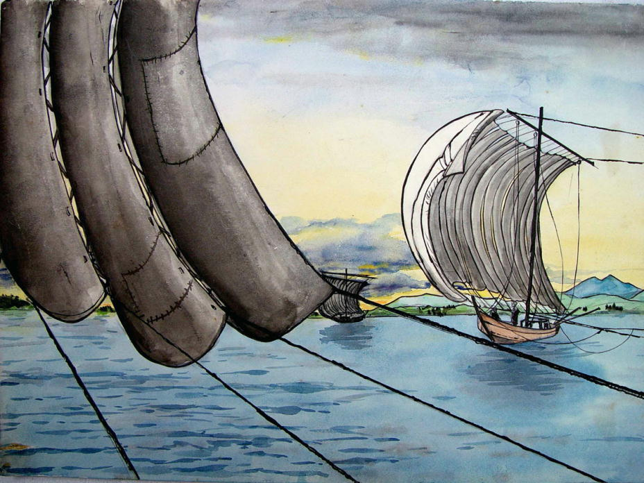
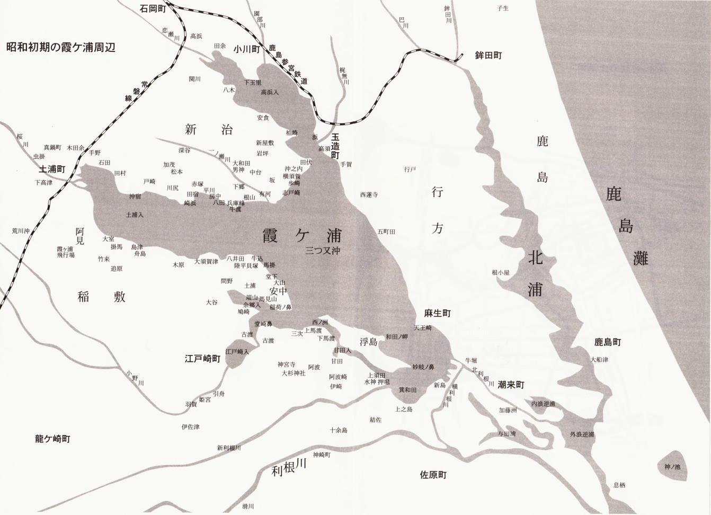
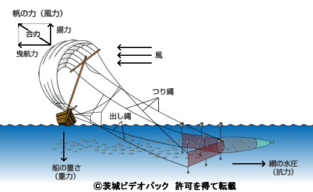
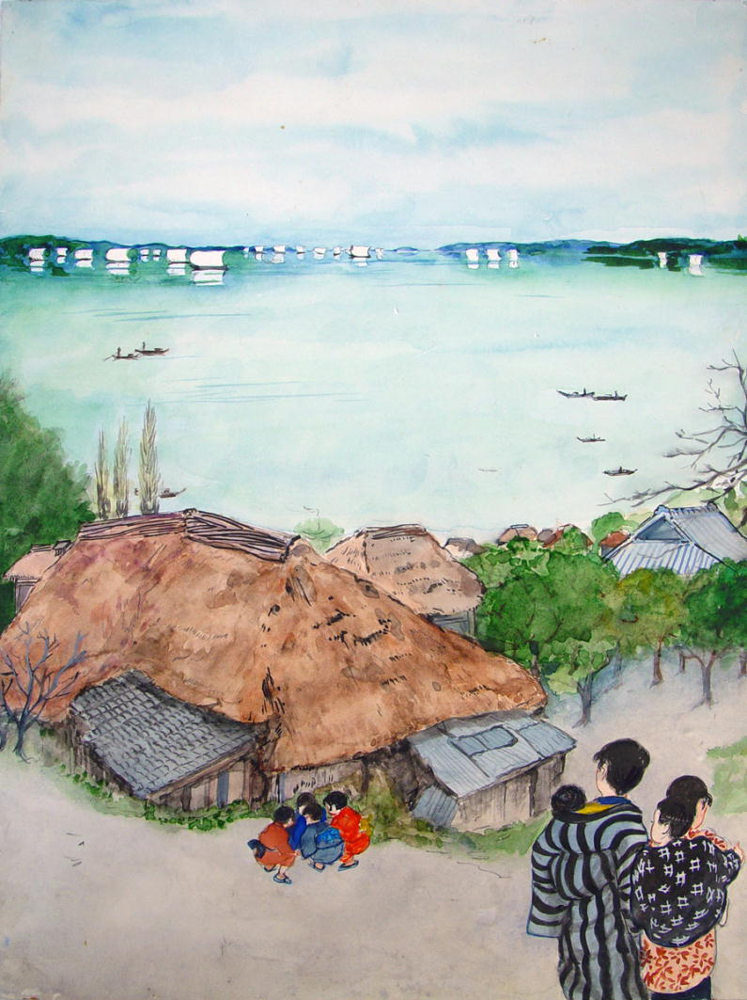
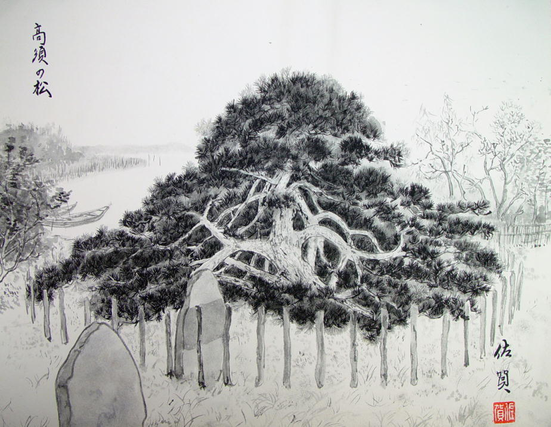
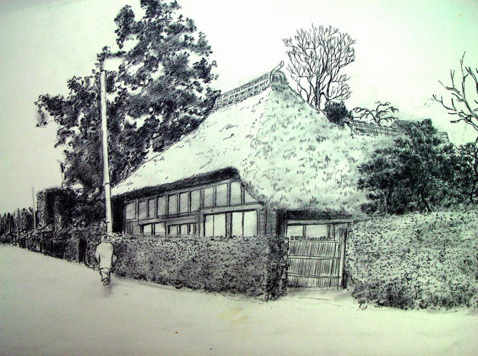
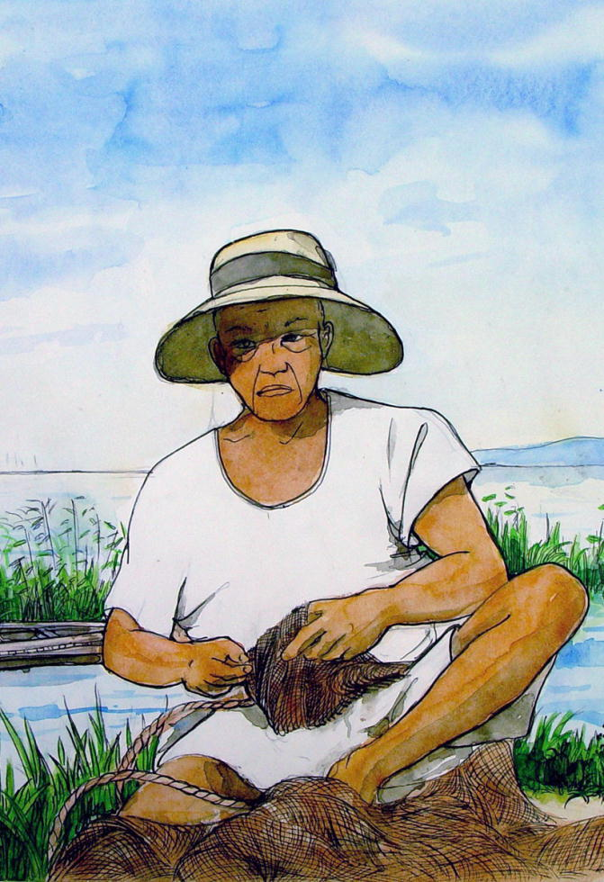
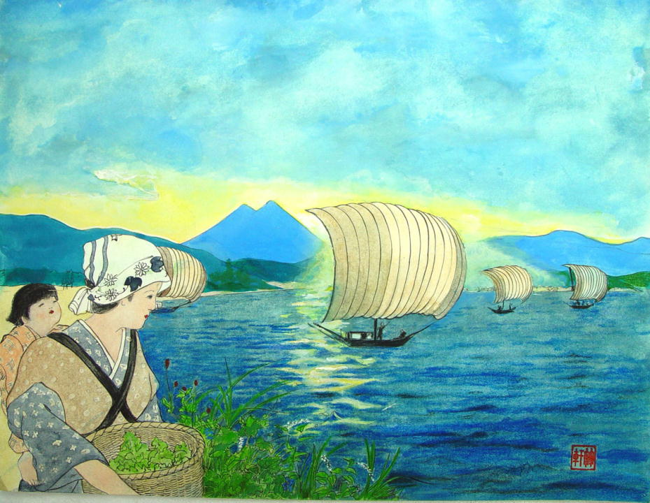
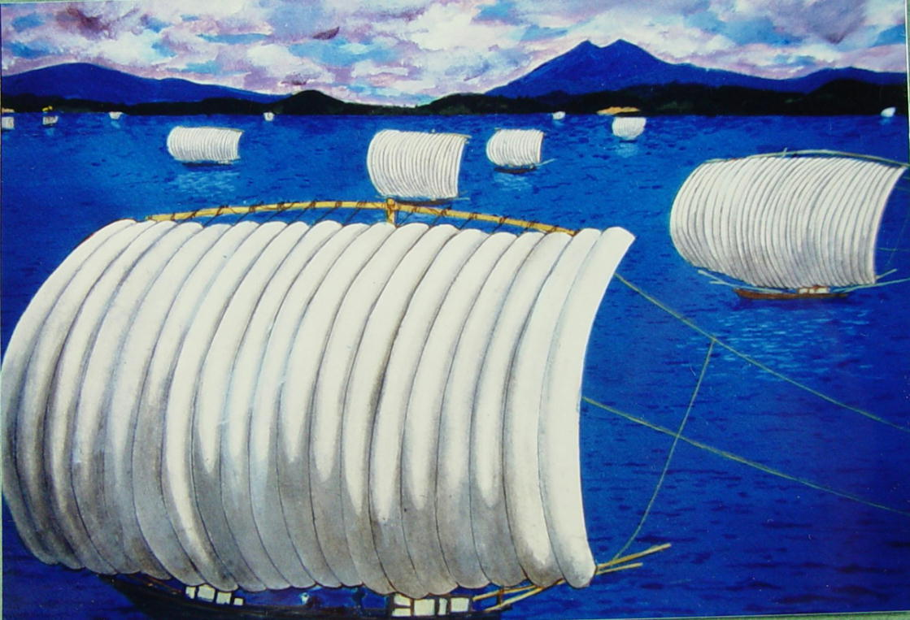
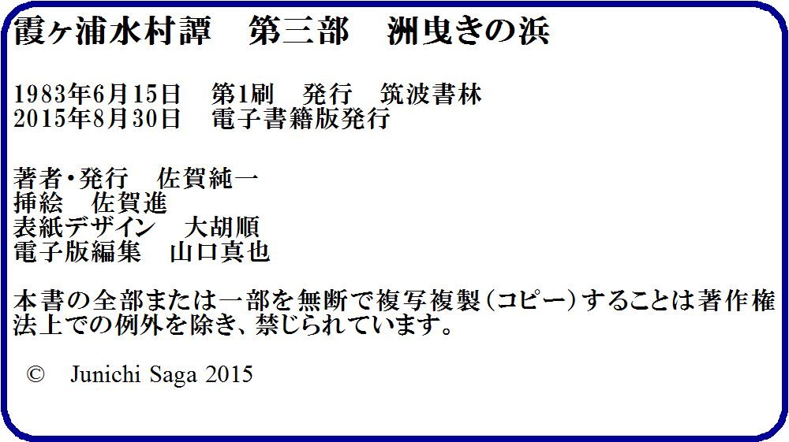

| 洲曳きの浜 霞ヶ浦水村譚 | |
| 佐賀純一 | |
| (2015) | |
霞ヶ浦水村譚
第三部 洲曳きの浜



丑寅の風がみわたす限りの茅の原を、乱暴に薙ぎ倒していた。強い風のかたまりが横なぐりに襲いかかると、茅の原はざあっと凄まじい音をたてて、灰褐色のうねりをどこまでも広げていった。
茅の原の尽きるところに広い砂浜があった。砂浜は病人の肌のようにしらじらと、鈍く光っていた。
隆吉は銀治と肩を並べて渚に立っていた。風が真正面から吹きつけてくるので、両足を踏んばって体を丸めていないと、根こそぎ吹き飛ばされそうだった。
波頭が吹きちぎられて、湖はいちめん泡立っていた。飛沫が横に流れるので、出島も行方もちらりとも見えなかった。
「いぐら手賀もんでも、こうた風ん中、来るわけがあんめえよ」
一間しか離れていないのに、銀治の声は十五、六間も向うからささやいたように頼りなく聞えた。
「来ねえべかな」
隆吉は目を細めて、波のかなたを凝っと見つめた。素足の指が氷柱のように冷えて、体の芯が硬くなった。
「帰っぺ！」銀治が唇を青くして、いらいらしたように叫んだ。「気狂でもなけりゃこうた日に船え出す馬鹿はどごにも居めえ」
銀治は両眼をぱちぱちさせ、湿った砂の上にぱっと唾を吐いた。
白い烏貝の殻の傍に、足をもがれた蟹のような格好をした流木が、波にもまれて揺れ動いていた。銀治は背を丸めて、嘉兵衛の宿の方へ歩き出した。褞袍の裾が風にあおられて、すり切れた股引がちらっと見えた。
「丑寅の風も、これで六日目だ。八日吹きちゃ言うにゃ言うがよ、ほんとに八日も吹かれたんではどうにもなんね、ふざけた天気だ」
隆吉は銀治に追いつくと、天に唾したい気持で空を眺めた。三月の空は鏡のように深く透き通って、どこまでも青く光っていた。風がその青一色の中を、渦を巻いて走っていた。
隆吉が出島の根山からこの浮島にしらす曳きに来たのは七日前のことである。出かけて来る日は早春の東風がゆるやかに吹いて、しらす曳きには絶好の日和だった。それが、嘉兵衛の宿に落ちついた次の日から、この凄まじい風が吹き始めたのだ。
井戸端で、おくらが洗濯をしている。真っ平らな砂地の中で、おくらの姿だけが紺色に光ってまぶしく見える。
おくらは立ち上って、はねつるべの桶を井戸の中へ落とし、すぐ引き上げると、汲んだ水を盥の中へ注ぎ込んだ。水が途中で風にさらわれて、布きれのようにきらきらとちぎれた。
「手伝ってやっかよう」
銀治がおくらの後から声をかけた。
「銀治さんも隆吉さんも、さっきからああたとこで、なに突っ立って見てただね」
おくらの髮はばさばさにそそけ立って、前髮が額に幾重にも垂れていた。この春で二十二という話だが、唇がぷっくりと紅くて、両の頬もやわらかい餅のようにふくらんでいるので、どう見ても十八、九にしか見えない。
「こうた寒い風ん中で、洗濯なんぞやんなくたっていかっぺなあ」
銀治はおくらの傍にしゃがみ込んで、怒ったように言った。
「これぐれえで寒いなんて言ってたれば、ここにゃ住んでらんねえよ」
おくらは手を休めずに動かしながら、ちらっと隆吉を見上げた。
浮島の広い砂浜には、嘉兵衛の宿が一軒、ぽつんとあるきりである。渚から松林までは距離にしておよそ四、五十間、この広い砂浜が和田岬から西の洲まで一里近くも続いている。
嘉兵衛の宿を一歩出ると、目の前はみわたす限りの広漠たる砂浜である。その尽きるところに、遠浅の、澄み通った霞ヶ浦の水が波打っている。
浮島に人が住みついたのは二千年以上も前のことだという。島のほぼ中央に「お伊勢の台」と呼ばれている丘がある。その昔、景行天皇が東国を巡奉した折、このあたり一帯を征服した日本武尊を偲んで一カ月余り滞在した帳宮の跡だと伝えられているが、ほんとうのことは誰にも分らない。
村々は、島の南側に帯のように細長く発達している。西戸崎、東戸崎、中郷、柳縄、原口、前原、小船戸、尾島などの小村が、稲敷台地の突っ先の、阿波崎、須賀津などの村々と向い合って続いている。
島の中央には小高い岡がある。松林が島の背を覆っている。西北の風はこの防壁に遮られて、南岸の村々はとても暖い。しかし、嘉兵衛の宿はこれらの村々と遠く離れて、島の北岸の砂地にたっている。冬の風は、湖を越えて、まともに吹きつけて来る。
嘉兵衛は漁師から魚を買い、それを塩煮にしたり佃煮にしたりして、町の問屋に卸している。嘉兵衛は宿銭を一文も取らない。
漁師は自分が食う米と、風呂に使う薪を少しばかり運んでくれば、それで幾日でも泊ることができる。そのかわり、漁師は捕った魚を嘉兵衛に売らなければならない。嘉兵衛と漁師たちは、互いに義理を受けながら、それを当り前と思って生きている。
おくらが嘉兵衛の宿に女中に入ったのは五年前のことだ。大杉様の北の来栖という部落の小百姓の娘だそうだが、こんな吹きっ曝しの漁師宿で、よくも五年も辛抱できたものだと、隆吉はこればかりは感心している。
「北風ばかし吹いて、漁に出られなくて、お気の毒だなや」
おくらはひびわれた手で色あせた股引をぐいぐいと力強くしぼり上げた。水滴が風に吹きさらわれて一間ほど離れた砂地にまばらに落ちた。
「誰んだ、そうた股引！」
「由郎さんのだっぺな、もうはあ四年がとこもはいてってから、あっちこっちとろくなってら」
「由郎の股引なんぞ洗ってやんなくたっていいんでねえのか？かみさんがいるつうのに、股引まで洗あせるこた、あんめ」
銀治は物欲し気な眼差しで、おくらを見つめた。おくらは知らんふりして洗濯を続けていた。
由郎は嘉兵衛の一人息子である。今年三十になったばかりだが、四十五、六の顔をしている。二十の時に今の嫁をもらったが、どうしたわけか、まだ子どもが出来ない。嘉兵衛の母親のお芳は、嫁のおまさを追い出して、新しい嫁をもらいたいらしいのだが、由郎はいっこうにその気にはならないらしい。おまさは、背の低い、丸顔の、ひどく色の黒い女なのだが、声がとても優しいので、声だけ聞くと、どんないい女かと、漁師たちはさいしょ、はっと胸を突かれる思いがするほどである。
おくらがこんな寂しい宿に五年も勤めていられるというのも、あるいは嫁のおまさの力量なのだろう。
「おくらがああた寒いとこで洗濯してるつうのは、やっぱし、手賀の徳三の船が来やしねえかと、あそこで見張ってんではねえのか」
銀治が、木の根のような足を、砂の上に腹立たし気に踏みつけた。砂は大きな足形を刻み込み、それを地を這う風がたちまち吹き崩した。
「さあ、どうだかよ」
隆吉はニヤッとしておくらを振り返った。徳三がおくらに気があるとはどう考えても思えないが、おくらが徳三に想いを寄せるということは、大いにありそうなことだった。
手賀からは毎年、三人の漁師が洲曳きに来た。徳三とその親父の吉三郎、そして耳欠けの国蔵である。国蔵は並の漁師ならとっくに船を下りている年輩である。隆吉は国蔵の帆さばきを見るたびに、いつか自分もあれほどの漁師になりたいと思う。出島の虎松や松之助も確かにうまいが、国蔵と比べると格が違う、と隆吉は思う。しかし、どこがどうちがうのか、隆吉にはまだはっきりと分らない。
宿の中はひっそりとして、囲炉裏で杉の葉が燻っている。裏の物置きの方から叺を織る音がする。嫁のおまさが、物置きの戸を閉めきって織っているのだろう。
「おめえさん方は出てがねえのか」
囲炉裏の奥の横座からいきなりしゃがれた声が響いて来た。二人はぎくりとしてその方を見た。薄暗がりの中で、姑のお芳が小さな体を猫のように丸めて、縫いものをしていた。
「こうた日に、どこさも行ぐ気にゃなんねえべ。みんなは大杉様さ行ったのか」
「んだ。この分ではあしたもこの風は吹くベからなあ。虎松さんも、松之助さんも、小一郎も、寅二も、みんな出かけちまったよ。大杉様の前の中屋つうとこにゃ今度いい女が来たつうこったから、 今日は泊って来んだっぺよ」
「銭もろくにありもしねえくせに、松之助だって、そうたにみんなの世話ばかり焼いてるつうと、今に日干しになっちまあど」
銀治は上り框に腰を掛けて、腰から煙管をひき抜いた。隆吉は素足についた砂を払って上にあがると、板の間続きの八畳間にごろりと横になった。萱屋根を渡る風の音が荒々しく伝わって来た。障子がカタカタと細かく震えた。
「おい、隆、おらたちも行んかよ」
銀治の声が、どこか遠い空から降って来るようだった。
「どごさ ......」
隆吉はぼんやり天井を眺めながら、面倒くさそうに言った。こうして風の無い畳の上に横になっていると、ひとりでに瞼が落ちて、深い眠りに引き込まれていきそうだった。
「松之助らの行った茶やだよ」
「行がねえよ、行ぎてえんなら、おめえひとりで行って来う」
隆吉は瞼を閉じたまま、両腕を頭の下に回した。国蔵が高い波の上を、帆桁を低く下して、悠然と渡って来る様がまざまざと目に浮んだ。以前、寒中の漁で寒さにちぎれ落ちたという右耳の残り下半分が、やけに大きく、黒々と見えた。
「今夜は風呂はあんのかね」
銀治は煙草を吹かしながらお芳に話しかけた。
「誰がこの風に、火い焚くつうんだね」
「飯だって炊くだから、風呂立てて悪いつう法はあんめえ」
「ばか言うんでねえよ、こうた北風の日に、火でも出したればそれこそ大事だぞ。おらたちゃこの島追ん出されちまあかんな、風呂なんぞ金輪際立てられねえよ」
土間の戸の向うで、何もかも吹きちぎっていきそうな風の音がする。なんのために、こんな風が吹くのか、どこからどこへ吹いていくのか......。隆吉は目をつぶって、ぼんやりと考える。
カタリという物音に目を覚まして半身を起こすと、銀治は囲炉裏端に横になって、口を開いて眠っていた。
おくらが竈の前にしゃがみ込んで、火を焚いていた。梁から吊った麻縄に、洗濯物が三竿もぶら下っていた。
「気いつけて火い焚けよ。煙突から火の粉がけっして飛ばねえように、火加減すんだぞ」
お芳は横座に座って縫い物を続けながら、おくらの挙動に注意深い視線を送っていた。
「おらあ、ちっと歩いて来っからな」
隆吉は起き上ると、おくらの尻を見つめながら土間へ降りた。素足の平に、土間の硬い三和土の感触が、ひんやりと気持良く伝わってきた。
「どごさ行ぐんだね」
お芳が隆吉と手元の針に半々の視線を分ちながら、気のない声で訊ねた。
「ちょっと、そこらだ」
「銀治さんは置いてぐのけ」
おくらが首だけくるりと回して、煙で少しばかり目を赤くして言った。
「大杉様さ行ぐわけではねえから。水の色見に出て来るだけだからよ。銀治にゃ飯前にゃ戻るって言っといてくれ」
外へ出ると、風が媼袍の奥まで吹き込んで来た。波のうねりは一層激しくなって、白く流れる湖の上には、一艘の船影も見えなかった。
隆吉はしぶきに濡れた砂地をどこまでも西に向って歩いた。今年こそ庚申岩を乗っ越してみせなけりゃなんねえ......。
隆吉は渚に打ち寄せる波に足を洗われながら、ずんずんと歩いた。正面の空に、筑波の山が無愛想に突っ立っていた。
嘉兵衛の宿から半道ばかり西に、庚申塚があった。
「庚申塚つうのは恐ろしいとこだ」漁師たちは昔からそう言い伝えてきた。隆吉の祖父の重之助も、隆吉が物心つく頃から、
「いいか、お庚申様の下さはけっして船着けて眠っちゃなんねえぞ」
と繰返し言い聞かせたものだった。漁師たちは、猿をまつった塚がなぜ恐ろしい場所なのか、その理由は皆目知らなかった。ただ、隆吉は重之助から、
「お庚申様の下で眠るつうと、人間の体ん中に宿ってる三尸の虫つうのがつるりと抜け出して、その人間のやった悪いことを洗いざらい神様にしゃべっちまあつうこった。そんでその人間はけっして長生きできねえつうこったからな。苫切って寝っ時には、そこらにお庚申様があっかねえか、よおく確かめてから棹つなぐこった」
と教えていた。いったい人間の体の中に三尸の虫などというものがいるものなのか、それがどうして猿と関係があるのか、隆吉にはさっぱり合点がゆかなかったが、庚申塚の下ではけっして寝るなという教えだけは、ちゃんと守り続けていた。
庚申塚のいわれはともかく、隆吉にとって問題なのは、庚申岩であった。庚申岩というのは、庚申塚の北の沖合に広がっている巨大な岩の群である。この一群の岩は水面下に没しているから、岸から眺めたのでは全く見ることができない。しかし、船の上から水の中をのぞくと、その岩の形や広がりを、手に取るように知ることができる。
嘉兵衛の宿の方角から船にのってくると、まず第一に突き当るのが、長さ百間、幅十間余りの平岩である。この岩は渚から十間ばかりのところから始まって、東北の方向に、水面下一間ばかりのところを、けたのあたりまで続いている。けたというのは、遠浅の砂地が泥と移行する境い目を指す言葉である。ちなみに、渚寄りの部分を漁師たちはきわと呼び、きわとけたの中間の部分を、中沖と呼びならわしている。
しらす曳きの船の網は、遠浅の砂地の底をなめるように曳いて走る。したがって水深一間ばかりの平岩にぶつかると、当然これを越すことはできない。この平岩を越えるためには、この岩の陥凹部にうまく船を繰っていく必要がある。陥凹部は二カ所ある。一カ所は岸寄りの端から三十間ばかりの所、二つ目はそれよりさらに四十間ばかり沖へ寄った部分である。それぞれの陥凹部分の幅はおよそ七間～七間半、したがってここを通るためには、船を陥凹部のちょうど真ん中にもってゆかなければならない。
第二の岩は第一の岩から約五十間ほど西寄りにある。渚から五、六間ばかり沖からはじまって、やはり百間先まで続いている。その方角は第一の岩よりやや北寄り、北北東の方向に向いている。陥凹部は渚よりの端からそれぞれ二十間、五十間、七十間と三カ所である。
この岩からさらに三十間ばかり西に、第三の岩がある。この岩はずっと短くて長さは十五間ばかり。渚から三十間ほどのところから北西の方角を向いて沈んでいる。これは平岩ではなくて、表面が釣り鐘の肌のようにでこぼこしている。
この第三の岩と第二の平岩の間の中沖に、からかさ岩と呼ばれている巨大な丸岩がある。大きさはおおよそ畳で十六畳ほど、表面が赤褐色をしている。この岩はその名の通り、水面に近い部分がからかさのように広がり、底の方が急にすぼまって砂の中に没している。だから、からかさというよりも、むしろ茸に似ているといえるかもしれない。
このからかさ岩に網をひっかけてしまうと、それこそひどい目に遭わなくてはならない。岩の上に船をもっていって、網をたぐり上げようとしても、網は岩の首の部分に巻きついているから、引っ張っただけではけっして外れない。それでこんな時には、まず帆柱を倒し、網をつなぎとめている二本の太綱のうちの一本を外して、残る一本をたぐりながら、ぐるりと岩の周辺を一回りする。そうすると、網はよほどこんがらかって巻きついていない限り、首から襟巻きをほどくように外れるから、外れた網を船の上にたぐり上げて、また元通りに修復するのだ。
もしこんな時、仲間の漁師が手を貸してくれれば、網を外さなくても、網の最も先端の部分、つまり魚を捕えるしどのところをひっぱり上げて、岩にからまった網をすっぽり外すことができるのだが、漁が始まればどんなに親しい仲間でも、互いに仇同士のように水揚げ高を競い合うのだから、腕が悪くて岩に網をひっかけた者なぞ嘲笑って見過しはしても、手助けする者は一人もいない。
こんな平らな遠浅の砂浜に、どうしたわけでこれほど大きな岩の群が出来たものか、そのわけは誰も知らない。恐らく岸辺の庚申塚は、漁師たちがこの浜で魚を獲るようになってから、しばしばひどい目に遭って、それで、ここに近づいてはいけないぞ、という警告の意味をこめて建てたものなのだろう。
洲曳きの浜は、和田岬から嘉兵衛の宿の前を西の洲まで、三十町余りも続いている。庚申岩は和田岬から計って約二十三町、西の洲から計ると六、七町のところにあるのだから、しらすを獲るためだけなら、庚申岩を乗っ越す必要は全くない。というのは、和田岬から庚申岩の手前まで、二十三町の距離を曳けば十分に獲物は捕れるからで、残る六、七町は、網を入れる者が少ないだけに獲物が多いにはちがいないが、もし岩に網を引っ掛けたりすれば、その日の漁ができなくなる恐れがあるし、運が悪ければ、網の修理に村へ戻らなければならなくなる破目に陥るのだから、そんな危険を冒してまで、庚申岩を通り抜ける必要なぞさらさらないのだ。
しかし、それでも若い漁師たちがなんとかしてこの岩を乗っ切ろうと腕を競い合うのには、それなりの理由がある。それは、庚申岩を乗っ切った、というその事実が漁師として一級品の腕利きであることを公けに認めさせることになるからだ。
浮島の浜に洲曳きに来るというだけでも、並の漁師にはたいへん苦労なことである。というのは、「しらす曳き」あるいは「洲あげのしらすびき」という漁は、きわからけたまでの遠浅の狭い砂地に産卵に来るしらすを捕るのだが、この狭い洲に網を曳くためには、東風に乗って、自在に帆を繰れなくてはならない。
きわからけたまで凡そ百五十間、その狭い場所に、巨大な網を広げた帆曳船が十数艘も舳先を並ベる。だから、もし腕が悪い者が混ると、他の船の邪魔になるし、渚から一定の距離を保って走ることもできないから、みんなに馬鹿にされるのだ。
「なんだ、今度来た田伏の野郎、ああたみったくもねえ腕えして、そんでよくもまあここさ洲曳きに来られたもんだ」
腕の悪い漁師は、一同の格好のなぐさみものになってしまう。だから、この浜には粒選りの漁師以外は近よって来ない。毎春きまって来るのは、根山の虎松と松之助、有賀の寅二、志戸崎の小一郎、手賀の国蔵と吉三郎親子、五町田の惣右衛門、それから根山と並びの浜の銀治と隆吉、このほかに田伏から来るのは勘仁門、沖之内からは平蔵が顔を見せる。
隆吉と銀治は、親の代からここに来ている。隆吉の父親の源太郎は、虎松と並んで、出島では屈指の漁師だったが、卒中を患って早く死んでしまった。銀治の祖父は結城の方からの流れ者で、浜のヤワラの中に掘立小屋を建てて住みついて、祖父という人は大尽どんの手間取り仕事をして一生を終え、その息子の善吉は松之助の親父の大徳網を手伝って、一人前の漁師になった。だから、銀治は漁師としては二代目だが、祖父という人が乞食同然の格好をして流れて来たから、屋号は今でも「乞食」と呼ばれている。
浮島の嘉兵衛の宿に集まる漁師たちは、こうしたわけで、広い霞ヶ浦でも粒選りの男たちである。しかしそれでも、庚申岩を乗っ越せる者は、虎松と松之助それに手賀の国蔵、この三人よりほかに誰もいない。
長い間、泡立つ水面を眺めていると、水底の巨大な岩が、陰鬱な眼で、凝っとこちらを見つめているように思えてくる。何千年、何万年の時の流れに耐えて来た岩の全重量が、湖を渡って来る風と共に、恐ろしい力で、隆吉にのしかかって来るような気がする。
「どうた具合に乗っ越すのかって？......そうたこと、口で教えられっと思うのか」
虎松のあざけるような声が、風の中にはっきりと聞こえる。
「口で教えられるぐれえなら、みんなとっくに乗っ越してら......漁師つうもんにゃ、口なんざ要んねえんだ。要んのはな、腕と勘と、根性つうやつだけだ。船さ乗ってるつうと、水の色がなんでも教えてくれる。魚がどこに居っか、天気が変わっか、岩がどこに隠れてっか、そうたことがみんな分る、......それを見んのが漁師つうもんだ。んでねえのは、漁師ちゃあいわねえよ」
波頭が吹きちぎれ、飛沫が白い霧の網となって、茅の原を包んでいる。
隆吉は、砂の上に腕を組んで突っ立っていた。岩の重みを船底に感じながら、それを乗っ越してみたい、という本能的な願望が、隆吉の胸をしめつけた。
隆吉は、唇を噛みしめると、嘉兵衛の宿とは反対の、西の洲の方角へ向って歩き出した。砂地の左手に松の林が疎らに続いていた。その西には見渡す限りの茅の原が広がっていた。隆吉の素足の下で、枯れた茅の茎がぱりぱりと鳴った。茅は隆吉の腰ほどの高さしかなかった。隆吉は白茶気た原を真っすぐに歩いて行った。
振り返ると、庚申塚の上に、青黒い湖がおおいかぶさって見えた。泡立つ波が盛りあがり、ぶつかり合って、白いべールがその上空を隠していた。
風が一瞬吹き止んだ。茅がいっせいに頭を起した。奇妙なほど静かだった。青と黄と白の世界が、隆吉を取り巻いていた。
頭の上に太陽があった。風に吹き散らされていた日の光が、今、はじめて隆吉の上に降り注いできた。足元から鳥が飛び立った。「かぶれっちょ(ツグミ)だな」隆吉は一瞬そう思った。
風が再び吹きはじめて、茅の原がざあざあと鳴った。隆吉はその中を、目を細めてどこまでも歩いていった。

葦原の中に、苫舟が一艘泊っていた。見るからに恐ろしく汚い船である。舳先から艫まで水苔がびっしりくっついている。苫屋根を覆っている古蓆はところどころ破れて、その下から今にも裂けて穴のあきそうな杉板がのぞいている。
船の中で、背の曲った小さい婆さんが、竈の前に屈み込んで火を焚いている。葦原は西の洲から南へ入った凹地に入り込み、北側にはこんもりとした松山が続いている。風は島の北側と比べると、嘘のように静かだ。
ばあさんは飯を炊いている。鍋の中で米粒の煮える香りが岸辺まで漂って来る。
隆吉が立ち止って船の中を眺めていると、突然、右手の立ち枯れの葦の間から、素っ裸の男がぬっと立ち上った。
男は、この寒さの中で、全くの素っ裸である。男といっても、もういいかげんの老人だ。
なかば抜け落ちた頭髮は真っ白で、胸元まで垂れ下った顎鬚もまた、白い兎の毛のように真っ白である。目が糸のように細い。耳と鼻がやけに大きい。褐色に日焼けした肌は少々皺が寄ってたるんではいるが、肩や腕の筋肉は隆々として、肋骨一本見えない。
老人は大きくて長い陰茎を股間に下げている。そして、奇妙なことには、陰茎の先っちょを、わらしべで縛っている。つまり、亀の頭の部分に包皮をかぶせて、わらしベで包皮の先をくるくると巻いているのだ。
老人は一瞬、隆吉の顔を無表情に眺めたが、すぐに視線を苫船の方へ向けると、太股ほどの深みの中を、辺りに波を立てないようにずぼりずぼりと歩いていった。右手に大きな魚を下げている。頭のでかい、ぬめっとした魚だ。「ナマズの九兵衛だ！」隆吉は瞬時にしてそれと悟った。
彼はこれまで、一度も九兵衛に出会ったことはない。しかし、その名前と九兵衛にまつわる奇妙な話は小さい頃から幾度となく聞いていた。
一番始めに九兵衛の噂を耳にしたのは、祖父の重之助がまだ漁を盛んにやっていた頃、つまり隆吉が六つか七つの時だった。
......隆吉は重之助の船の櫓を漕いでいた。櫓は隆吉の顔の高さにあった。子供の腕と比べると、赤樫の櫓は大木のように太い。隆吉の腰には付け紐が結んである。その一方の端は艫船張りにきっちりとゆわえてある。
「隆、船つうのは真っつぐ進むもんだベや。そうたに舳先が振れたんでは、筑波さ向いてたもんが、しめえにゃ潮来さ向いちまあど」
重之助は、生け間の蓋にあぐらをかいて、煙草を吸っていた。六月の日射しが照りつけて、水面がまぶしく輝いていた。
「もういいかげんでやめさせた方がいいんでねえか」
女房のたみが苫屋根の下の日蔭から穏やかな声をかけた。たみは膝の上に縫い物を広げている。きちんと結った島田が、三角の屋根の下でひどく大きく見える。隆吉は苫船に乗っている女で、祖母のたみほど美しい髮をした女を見たことがない。
「じいちゃんよ、この湖にゃ、じいちゃんよりかも漁のうめえもんは、他に居んのけ？」
隆吉は櫓にぶら下るようにして押しながら、左の二の腕で顔を流れる汗をツルッと拭った。
「そりゃあ数えぎんねえほど居っぺよ。じいちゃんなんぞ、それこそ下から数える方が早えぐれえだっぺ」
「そうたことあんめ、一番か、二番だっぺ」
「アハハ、一番か二番は良かったな、じいちゃんはな、もともとは百姓で途中から船さ乗っただから、本物の漁師つうわけにゃいがねえよ。おめえのおとっつぁんの源太郎は、ありゃあ小せえ頃から漁船さ乗ってただから一人前の漁師だっぺが、そんでもこの湖で一、二つうわけにゃいぐめえよなあ」
「そんだら、だれが一番なんだ、根山じゃおとっつぁんが一番だって、椎の木やのばっさが言ってたど」
「そりゃおめえ、商売人は世辞の一つや二つ言わなけりゃ、商売が立ち行がねえべ。源太郎は根山じゃ指折りの漁師にゃちげえねえが、有賀、浜、兵庫峰にゃ大した腕の強えもんが幾たりも居っぺ。
......まあず、この湖の周りにゃ、漁一本で生きてるもんが千人から居んだからな、逹者な者を数えたれば、それこそ誰を誰の上にすっぺかと、頭をひねくり回さなけりゃなんめえよ」
重之助は目を細めると、さもうまそうに煙草をすぱりと吸った。隆吉は唇をとがらかして、力まかせに櫓を押した。舳先がふらふらと揺れて、その度に隆吉の体も烈しく揺れた。
「そうた漕ぎ方してっと、足踏み外して水ん中さつっぺえど。付けひぼだってぶっ切れることもあんだかんな、そしたればおめえははあ魚の餌だ」
重之助はにやにやと笑った。
「水ん中さつっぺえったって、浜までぐれえ泳げらあ、......じいちゃんは、この湖で一番でなくて、そんで、何も腹立たねえのか......」
「腹立てたって、こいつばかりはしようがねえ、人には人それぞれの分つうもんがある。分を越えて背伸びしようたって、背伸びしただけくたびれちまって、たあだ無駄に早死にするだけだ」
「そんじゃ、一番の漁師は誰なんだ。八田の遠右衛門か、それとも源右衛門か......」
「どうだかなあ、あの男らも年期が入っていい腕してんが、もう年だっぺ。それに、まず一番腕の強え奴らはここらにゃ居めえよな」
「んじゃ、どこに居んだ。田伏か、志戸崎か」
隆吉は重之助を見た。重之助は隆吉の怒った表情が面白いらしく、煙草をくわえて微笑していた。
「手賀だっぺな。出島の漁師も腕は強えが、何つっても、手賀の奴らにゃ太刀打ちできねえ」
「手賀のもんは、そうたに強えのか」
「強えな......まあず、なんつうか、胆っ玉がちがあ。奴らはもともと加賀者だかんな。加賀者にゃ、ここらの人間はとてもかなあねえ」
「......」隆吉は櫓にぶら下って、重之助の穏やかな顔を憎らしそうに眺めた。波が日の光に輝いて、大きなボラが、すぐ舳先の前で跳ね上った。
「加賀者つうのは、何百年も昔に加賀の方から移って来たつう話だ。あっちの方では戦ばかしあって、食うにも困ったんだっぺ。新治だの柿岡の山の方にも加賀者はいくらも住みついてるつう話だ。奴らは決してここらの人間と混ろうとしねえ。昔からのしきたり守って、嫁もらあにも、みんな加賀者同士だ。そんだから、奴らはみんな縁続きつうわけだ。
俺は加賀者の徳一郎つう男の漁を見たことがあんがな。あれには驚いた。大西風の吹く日でなあ、俺は赤塚の先でごろ曳いてたが、風が強えんで、田宿の浜のやわらさつんむぐってた。出島のてい(輩)もみんな帆を下しちまって、崎浜の鼻から風のねえ浜の方さ逃げて来ちまったんだ。したれば、その崎浜の鼻先を、三丈三尺の帆柱突っ立でで、帆桁を半分ばかりに下して、風に乗ってつっ走っていぐ奴がいる。ありゃあ誰だ、あのうす馬鹿め、網上げられねえで死んちまあど。漁師らはみんなして笑っていた。あんまし風が強えと、船が流れんのが早すぎて、網上げんのにもどうにも上んなくなっちまあかんな、まあ崎浜逃しても志戸崎の鼻の風下さ入れば助かんが、それができねえつうと、行方まで五時間も西風に吹き曝されて凍え死んちまあことになる。少し前にも志戸崎の鼻さ逃げそこなって、八田の信次郎が牛堀まで流されて、みんなして助けに行った時には信次郎はいねえでよ。船は水船になってた。そんで船の水かい出して、帆柱ひき上げて、網を上げようとしたれば、信次郎は己はもう助からねえ、そんでどうせ死ぐんだれば、死骸を仲間が探すのに苦労しねえようにと思ったんだっぺなあ、己の体をものぐささからめて、そんで水ん中さ沈んでたんだ。村のもんの中にゃ、水さつっぺえたとき、たまたま綱にひっかかって、逃げようにも逃げられなかったんだっぺなんつう奴が居んが、そういう言い方するつうのは、仏の心を知んねえ奴だっぺ......
大西風つうのはこうしたわけで、おめえもよほど気いつけねえと命取られちまあが、徳一郎つう男は、その大西風の中を五時間も乗り切って、一網で百貫近くもわかさぎを獲ったつうこった。胆っ玉が太えつうか、命知らずつうのか、加賀者つうのは、他の漁師とは出来がちがあんだ、奴らと勝負しようとしても、こいつあ無理な話だっぺよなあ」
徳一郎は徳三の祖父である。徳一郎が死んで国蔵が湖一番と呼ばれるようになった。重之助には徳一郎と国蔵と、どっちが腕が上なのか、そんなことは分らないという。
船はいつの間にか兵庫峰と対岸の大須賀津の沖、洲平の鼻の方を向いている。洲平の鼻というのは、大須賀津の渚から沖に向ってまっすぐ、千メートル余りも突きでた砂洲である。この砂洲は水面下に没しているが、波の色がこの砂洲の右と左とでは幾分ちがうから、どこにあるのかすぐに分る。西風が吹くと、洲平の鼻の風上には恐ろしく高い波が立つが、洲平の風下はぐっと波が静まるから、突風に襲われた時なぞは、いち早くこの影へ入ろうと、漁師たちは一心に櫓を漕ぐのだ。
この日は風も穏やかで、洲平の鼻の周辺は、遠浅の湖に特有の浅黄を帯びた薄紫色に輝いていた。
「このまま牛込まで行んか」と、隆吉が言った。「そうすべか」と重之助が頷いた。
牛込は大須加津の東、八井田の次の部落で、高瀬が三、四艘も入れるドックがある。水飼惣之助という魚問やがあって、重之助は惣之助とは昵懇の仲だ。
「そういえば、ナマズの九兵衛さんにはずっと会わないね」
苫屋根の下で縫い物をしていた祖母のたみが、針を動かす手を止めて重之助を見た。
「この間は高須の松の下で会ったんでしたっけが、あれきりどっか行っちまって......死んだつう噂もきかねえし」
たみがこの間というのは、もう五年も前の冬のことである。日清戦争の始まった年で、重之助は田伏の対岸の高須の松の沖へいさざ曳きに出かけた。高須の松は、樹齢六百年とも七百年とも言われる、途方もなく長生きした松の大木である。枝を四方に張り、その枝が地面を蛇のように這っている。
松の沖合に大きな亀の形をした岩がある。もちろん水面下に没しているから、その場所は漁師しか知らない。渚から十五、六間沖合にあり、長さ十間、幅一間。面白いことに、この岩の下には穴があいていて、下を人間がくぐり抜けられるようになっている。
重之助が松を目指して船を漕いでいくと、岩のあるあたりの水面に、苫船が一艘停っていた。船は内も外も真っ黒に汚れ、ことに苫屋根の中は竈の煤がくっつくせいか、まるで獣の穴ぐらのように汚れている。こんな汚い苫船に乗っているのは、ナマズの九兵衛より他にない。
「オーイ、九兵衛さん、いるかね」
重之助は船を寄せて声をかけた。屋根の下から煙がうっすらと立ちのぼっている。
「いまもぐってるだよ」
真っ黒い船の中からしわがれた女の声がした。風が無いとはいえ、水垢のへばりついた苫船の舳先に、今にも凍りつきそうな細い波がひたひたと打ち寄せている。
「なにとってるだね」
「鯉めだ、穴っこに入ってる奴だよ」
話してる間に、二艘の苫船の間にずっぽりと九兵衛の頭が浮かんだ。九兵衛は重之助の顔を見ると、ああ、という風に、紫色の唇を歪め、胸の中に抱え込んだ大きな魚を、苫船の船べりから中へほうり込んだ。
「こうた寒い日に、よくもまあ水ん中さへえれるもんだな」重之助はいつものことながら、やはり大いに驚き感嘆して、素っ裸の男の体をつくづくと眺めた。少し薄くなったごま塩頭に、やはり白いものが目立つ顎鬚をたくわえ、目は毛筋ほどに細く、口は大きく紫色で、五尺余りの体が鋼鉄のように鈍く光っている。
「何貫目ぐれえあるのかね」
重之助は船べりを相手の船に接して、中をのぞき込んだ。
「どんぐれえあっか。まず十日は食いつなげベ」
「岩の穴にゃ他にも居っけね？」
「居っとも。みんな頭を泥ん中さつんむぐらして眠ってら。よりどりみどりつうわけだ」
「そんだら、もう少し取って売ったら良かっぺ、こうた見事な鯉、鯉於朶だってそうめったにゃ取れねえど」
「なに、漁はもうしめえだ。昨日、鳥縄が上の方から流れて来てなあ、真鴨めが五匹がとこもくつかってたから、かまあねえ、ちょうだいしといた。もってぐかね」
九兵衛は裸のまま、苫屋根の中へ首をつっこみ、両手に一羽ずつ大きな鴨をぶら下げて、重之助の方に突き出した。
「そうたもん、もらっちゃ悪いべ」重之助は肥った鴨をつくづく見ながら、遠慮していった。
「悪かねえ、どうせ盗んだもんだ。ばあさんと二人じゃこうたに食いぎんねえ。もってってくれ」
九兵衛は二羽の鴨を重之助の船の中へ投げ出した。九兵衛の体は夕日をあびて黄金色に光ってい た。流れ落ちる水滴がまるで溶けた鉄のようで、重之助は世の中にはこんな凄い男がいるのかと、心の底から舌を巻いた。
「九兵衛は、寒中の水なんぞちっとも冷たかねえつうんだ」と、重之助は櫓を押し続けている隆吉に言った。「第一、魚は水がぬくといつうと動いちまって、素手なんぞでは捕めえらんねえ。それが冬、水が凍っちまあと、魚めらは冬眠して、石みてえにじっとしてる。そいつをつらめえんだから、これより簡単な漁はねえつうんだな」
「そんでも、寒中の水さ入ったれば、死んちまあべな」
「そりゃ並の人間が入ったればすぐに死んちまあよ。ところが九兵衛は平気なんだ。ありゃ仙人だ、人間じゃねえなんつう者が居んが、半分は仙人かもしんねえなあ」
九兵衛は水の中にもぐる時、陰茎の先を皮でかぶせてワラでしばるのだという。水にもぐる時ぐるぐるっと皮をしばって、身につけているものといえばそのワラシべ一本だけなのだという。
「九兵衛の言うのにゃ、人間つうもんは、亀の頭の先をじかに水に冷やさなければけっして死なねえつうんだな。皮でかぶせておきさえすれば、それで体はぬくといんだそうだ。ほんとのことかどうか知んねえが、おれもやってみたことはねえ。どうせ並の人間がそうたことやったってどうなるこってもあんめえし、ああしたことは、九兵衛だけができることなんだっぺよ」
隆吉は祖父の重之助の話を聞いて以来、いつか「ナマズの九兵衛」に会いたいと思っていた。ところがどうしたわけか、九兵衛の姿はしばらくの間影も形も見当らず、あるいは北浦か、羽賀沼か、牛久沼か、その先の管生沼の方へでも行ってしまい、もう戻って来ないつもりなのかもしれなかった。
漁師の中には、九兵衛は死んだという者もいた。〝もう年だし、寒中の水さ幾年もつかっていたんでは、長くは生きられめえ〟と彼らは言うのだった。隆吉は九兵衛が死ぬ前に一度は会ってみたいと思っていた。それで、死んだとはけっして考えたくなかった。なにより、重之助の話では、死ぬような男にはどうしても思えなかった。しかし、やはりこんなに長い間姿を現さないのでは、どこかで野たれ死にしたのではないかとも思われ、一度もその姿を見る機会がなかったのを、彼はひどく残念に思っていた。
ところが、その九兵衛が突然、眼前の葦原の中から姿を現した。隆吉は、老人の姿が昔から心に思い描いていた格好と寸分違わぬことに、心底驚いた。
ナマズの九兵衛は、魚を船の生け間にほうり込み、一気に船の中に這い込むと、裸のまんま水草の中に差していた棹を引き抜いた。
舳先がつうっと水の中で回転した。
「行っちまあのかな」、隆吉は何か叫びたい気がした。しかし、何を言ったらよいのか分らずに、黙って突っ立っていた。
九兵衛は甘田入りの方へ舳先を向けた。そして一棹押して船をすすっと進めたが、急に船を止めて隆吉を振り返った。
「おめえは、根山の重之助の孫だな」
と、九兵衛は言った。しわがれてはいるが、よく通る声だった。
「重之助はどうしてるだね」
九兵衛は船を岸に寄せると、葦原の枯れ葦を舳先で無造作にへし折りながら、砂の上に船の先端を乗り上げた。
「ずいぶん前に会ったきりだでや」
「病気で寝てるだよ」
隆吉は気押されて、無意識に声を落して言った。
「病気？なした病気になったんだ」
九兵衛は、皺だらけの婆さんから盲縞の単衣物を受け取ると、くるくると手早く荒縄を腰のまわりに巻きつけた。
「あの男がなるのは卒中ぐれえだっぺ」
「んでねえ。神経痛だ。両手の骨も曲って来ちまった」
「ふうん、しゃあねえな。したが、漁やめちまったわけではあんめえ」
九兵衛は、隆吉が重之助にそっくりだといって、しきりに隆吉の顔を眺めた。
「漁師にもいくらも居んが、あれぐれえ欲のねえ漁師も少ねえな」
と九兵衛が言った。
「おかみさんは元気かね」
「ばっちゃんはまだまだ元気だ」
「ありゃいい人だ。美人だしな。ああたにきちんとした格好で船さ乗ってる女はまず他にいめえ」
ナマズの九兵衛は暖い日を顔いっぱいに受けて、楽しそうに微笑した。隆吉は、九兵衛という人間は、他の人間に関心なぞ全くないのだとばかり思っていたので、祖母を美人だと言ったことに少なからず驚いた。
「今までどこさ行ってたんだね」
「どこつうこたねえよ。あっちこっちだ」
ばあさんが船から降りて来て、挨拶もせずにそこらに落ちている枯木を曲った腰で拾いはじめた。
「夏はどう言う漁やんですかね」
「わしか？いろいろだな......」
水草の上でからみ合ってるナマズをとっつかまえたり、ちんちぇえ網を仕掛けて小魚をとったり、葦原の中に巣を作ってるバンやむぐっちょの卵だのヒナをつらめえて食ったりして、まあその日の胃袋にゃちゃんとあてがうものはあてがってやってると、九兵衛は言った。
「ナマズは、網で取れねえんですかね」
と隆吉は訊いた。ばあさんは枯木の束を艫板の上にほうり込み、船べりをよじ登ると、中の蒲団をひきずり出して、破れた古蓆の上にパラリと広げた。
「今日はここにすっか」
と、九兵衛が言った。
「ああそうすっぺ」
ばあさんは竈の下の火加減を見て、また苫屋根の下に姿を消した。
「網なんぞで取ったって、面白くもなんともねえベ」
と九兵衛は言った。
「そんでも、こうた寒い日に水ん中さ入んのは苦労ではねえですか」
「苦労なんつうもんはこうたことではねえな」
と九兵衛は言った。
「おめえはまだ嫁は居めえ」
「いねえです」
「そんでは子どももいねえ道理だ」
「いねえです」
「そんでは、苦労なんつうもんは、こればかしも分んねえ。水さ入るなんつうのは、苦労のうちにゃへんねえよ」
九兵衛はちょっと眉間を雲らせたが、すぐ元の表情に戻るとくったく無く笑った。
「寒中、裸で水さもぐる時つうのはな、己の体温が、魚の体温よりも高くては、けっして駄目なんだ」
と、彼は隆吉に話してきかせた。
「水ん中さ入ったばかりん時は、体がぬくといから、魚が気づいて逃げちまう。ところがこっちの体もだんだん冷えてな、そんで魚と同しぐれえになるつうと、こっちが後ろから近づいても、相手は眠ったまま気がつかねえ。そこんとこを、すっととっつかめえるんだ」
九兵衛は左手の親指を上げて、隆吉の目の前に突き出した。その指は樫の棒のようにがっしりして、いたるところに釘で刺したような穴があいていた。
「この指を、ナマズの口ん中さつっこんでやる。そうするつうと、ナマズの野郎は腹立てて、この指に噛みつくべ。奴はいったん噛みついたれば、死んでもはなさねえ。そんで、噛みつかせたまんま水ん中歩いてくれば、それで難なく取れるつうわけだ。ナマズつうのはなかなか腹のすわったとこのある魚でな、他の魚相手にするよりかも十倍も面白え。そんで俺は、この年んなっても、こいつがやめられねえで、渡り歩いてるつうわけなんだ」
九兵衛は隆吉に、酒は飲むのか、と訊いた。
「少しゃやるだね」と、彼は答えた。「重之助はずいぶん好きだったな」と九兵衛は言った。
「じいちゃんは酒がねえでは眠れなかっただよ。おれが八つの時だったがな、秋水が出て、街道も水がかぶさっちまった年があったが、そん時も、おれは胸先まで水さつかって、椎の木やまで酒買いにやらされた。おれにも五つの時からなめさせてくれたっけね。櫓漕ぎがうまくできるつうと、よくやったつって、一口なめさせてくれた。そんでおれはそれが嬉しくて、五つん時から毎日半道がとこは漕いだっけね」
「悪い奴だ」
九兵衛は快さそうに笑った。それから真っ白い鬚を二、三度しごいた。
「ばあさん、酒出せや」
彼は船に向って大声で言った。
「わしの酒は不老長寿の酒だからな、まずいっぱい飲んでいけ」
彼は歯の欠けた口を黒々と開けた。
九兵衛が出してくれたのは、粟酒だった。瓶に入った粟酒は、黄色味を帯びて、どろりと濁っていた。つんと鼻を突く強いアルコールの香りが、葦原一面に漂った。
九兵衛は、汚れた茶碗を傍の水で器用に洗い、その中に粟酒をたっぷりと注いだ。
「まず飲め」
九兵衛は言った。隆吉は一口飲んだ。舌がざらりとして胸がつかえるような気がした。しかし思ったより味は良かった。
「こいつを飲んでるつうと、体が冷えねえ、おめえも寒中の漁に出っ時にゃ、船ん中さのせとくといいど」
九兵衛は自分の茶碗にもなみなみと注ぎ、それを一息でぐっと飲み干した。
二人は砂の上に座って、長い間酒を飲んだ。いつの間にか日が傾いて、水の色が縹色に変っていた。婆さんは苫屋根の上の蒲団を取り込み、竈で湯をわかして、船の上の薪束に腰を掛けて茶を飲んでいた。もう帰らなけりゃなんねえな。隆吉は水の色を見た。九兵衛と向い合っていると、時間がとまっているようなのが不思議だった。
「九兵衛さんは、いづまでここに居んだね」
隆吉はちょっとふらつく足で立ち上ると、夕日を受けて赤銅色に光っている九兵衛の額を見下した。
「二、三日は居っかもしんねえ」
九兵衛は茶碗を持つ手を伸ばして、葦間の水を汲み、ごくごくとのどを鳴らして飲んだ。
「二、三日したら、どっかさ行ぐのかね」
「さあ、分んねえが。余郷か羽賀沼さ行ってみべと思ってる」
「余郷はいいとこだかんな」
「ああいいとこだ。したが、わしの苫船さ乗ってるつうと、悪いとこなんぞどこにもねえぞ。わしも、おめえの年頃はいろいろあったが、今はもうなあもねえ。いまに目え覚ましたら、わし自身がナマズになって、砂の上で昼寝でもしてんではねえかと、そうた風なことを考えることが時々あんだよ」
隆吉は九兵衛と別れると、茅の原を真っすぐ突っ切って行った。東へ向っているつもりだったが、実際、東へ向っているのかどうか、分らなかった。頭の上で、松の枝がビュウビュウと唸っていた。松山を越えると畑があった。畑を突っきると、また小高い松林が続いた。そして、その松林の先に湖があった。夕暮の湖は、吹き止まぬ風にあおられて、藤色のしぶきを空中におどらせていた。
浜辺に人影はなかった。「ナマズの九兵衛は、他人の女房をかっぱらったんだ」と遠い昔、寝物語に重之助が語ってくれた記憶が急に脳裡に甦った。
渚を歩くと、素足の下の砂がえぐれて飛んだ。
九兵衛を思うと、徳三も虎松も松之助も、ひどくつまらなく見えた。粟酒のぬくもりが、隆吉をこのうえなく幸福にしていた。
砂浜の遙か彼方に、嘉兵衛の宿が見えた。宿はやけに小さくて、低いわら屋根が松ぼっくりのように、風の中で身を縮めていた。

国蔵たちはとうとう来なかった。虎松や松之助たちも茶やへ泊るつもりなのか、飯時を過ぎても戻って来なかった。柳縄に用足しに行って、日暮時分に帰って来た嘉兵衛は、こう毎日風が吹いたんでは、魚が売れなくて口が干上っちまあと、ぶつくさ文句を言った。
囲炉裏を囲んで隆吉と銀治、それに嘉兵衛と由郎親子が飯を食い、お芳と嫁のおまさは板の間で飯を食った。おくらは板の間の隅の箱膳に飯茶碗と汁茶碗を伏せたまま、上り框に腰をかけて一同の給仕にいつでも立てる用意をしていた。
飯を食い終ると、もう何もすることがなかった。囲炉裏端に座って火を見つめていると、瞼がひとりでに重くなった。薄暗いランプの下で、おくらが茶碗を洗う音がした。
銀治は篠竹を削っていた。四、五尺もある真っ直ぐな篠竹のところどころに穴をあけ、細い小刀で器用に節を抜いていた。
「なんだね、そいつは？」
おくらが囲炉裏に薪をくべに来ながら、好奇心に充ちた目で銀治の手元を眺めた。
「なんだがなや、あててみろ」
銀治はいささか得意そうに唇を歪め、隆吉に向って、黙ってろよ、という風に目で合図した。
「その竹は、淡貝取りの竹だっぺ」
「んだよ、そいつでいいものこさえてんだ」
「なんだかなや」
「なんだか、すぐこさえてみせっから、いまちっと待ってろ」
銀治はおくらの気を引いたことで、大いに満足している様子だった。小さな穴を探る手が小器用に動き、削り取られた竹の屑が、銀治のむき出しの太股にぱらぱらと落ちた。
銀治の造っているのは吹き筒だった。吹き筒を造るのは隆吉も大いに得意だった。造り方は、祖父の重之助が教えてくれた。苫船で暮らす者は、たいがい吹き筒を作って雀ややわら雀(こじゅりん)を捕って遊んだものだ。
吹き筒をこしらえるのは、雨の日と決まっている。雨が降ると小さな船の中では寝ているか、膝を抱えて雨を見ているか、そのほかに時の過しようがない。辺りに広がっているのは一面の水と、水草と、葦原ばかりだ。問屋などに船を着けていれば、話し相手にことかかないが、ふだんろくに口もきかないでひっそりと暮らしている人間は、たまに大勢の人間と会うと、二、三時間もしないうちに、心底くたびれきってしまう。
「いいか、節はこうやって抜くんだ」
重之助は鋭利な小刀で、節の部分に注意深く小さな窓を開ける。窓は三分にも充たぬちっぽけなものである。重之助はその穴から細いキリダシ小刀を差し入れて節をすっかり取り去ってしまう。こうして、順々に節を取ってしまうと、窓の部分をそれぞれの穴に再びはめこみ、その上から半紙切れを巻いて、飯粒糊できっちり止める。こうすると、細い篠竹からはすベて節が取り除かれ、箸を入れると何の妨げもなく、つるりと他方から抜け落ちるようになる。
こうして吹き筒が出来上ると、今度は吹き矢をこしらえる。長さはおよそ三寸。先を針のようにとがらせた竹の後ろに、円錐形の半紙を飯粒でくっつける。円錐の大きさは、小さすぎれば矢が飛ばず、大きすぎれば吹き筒に入らないから、その加減をうまくやらなければならない。
「いいか、こうやってな、みてろ」
重之助は船をもやってある柳の木の真ん中を狙って、プッと筒を吹く。すると矢は三間も真っ直ぐ飛んで、柳の裂け目の中心の部分に突き刺さる。重之助は二発目をプッと発射する。するとそれは一番目の矢の尻の部分に当って、まるでつがったトンボのような格好になる。雨がぽとぽととその上に雫を落す。
「隆、おめえもやってみろ」
重之助は五十歳も若返って、まるで餓鬼大将になったような顔をして、隆吉に言う。隆吉は濡れた船べりに足をかけ、雨に頭を叩かれるのもかまわず、プッと、勢い良く筒を吹く。だが、矢は柳の木を一尺も外れて、葦原の葉の中に消えてしまう。
「そうたに力いれたってもだめだ。筒を動かさねえように、息だけで吹くんだ」
重之助にそう言われても、矢はさっぱり当らない。だがこうやって雨が降るたびに退屈まぎれに矢を飛ばしていると、いつの間にかひとりでに上達して、しまいには大して力まないでも矢は飛ぶようになる。葦原の間には、むぐっちょやバンが姿を見せる。それを狙って筒を吹くと、殆んど百発百中、矢は鳥の胸に当る。だが矢の力は弱いので、鳥は矢を刺したまま、烈しい水音をたてて逃げてしまう。
重之助は雀を専門に狙う。一日に十八羽も捕ったことがある。捕った雀は毛をむしって、炭火でとろとろと焼く。魚ばかり食べている口に、雀の味は格別にうまい。
「ほうれ、これで出来た。おくらさん、あしたは雀でもなんでもこれで取って来てやっからな」
銀治は言って、吹き矢を筒に入れてみせた。
「そうたもんで、当るのけ」
「当っともよ。いいか」
銀治はプッと筒を吹いた。矢は真っ直ぐに土間を飛んで、壁につり下げてあった大根に深々と突きささった。
「ごめんよ！」
銀治が矢を取りに立ち上った時、戸口に突然大きな声がした。戸がするりと開いて、坊主頭の、 頭のでかい、背の低い男が入って来た。
「ちっとばかしあったまらせてくれ」
男は言って、ずかずかと囲炉裏端へ上り込んだ。
「なんだ、茅手の達さん、この風で帰れねえのか」
嘉兵衛が眠そうな目で男を見た。
「んだよ。この風では茅もなんも運べめえ。向うじゃ屋根葺くのにもうはあ十日も待ってるつうに、こんじゃあ、また明日もだめだっぺ」
男は囲炉裏端に不機嫌そうにあぐらをかいた。おくらは急いで男の前に茶碗を置いた。
「あしたも吹くベかね」
由郎が火箸で灰の中を意味もなくつつきながら言った。
「吹くベな。悪くすりゃ、あさっても吹か。まったく、丑寅の八日吹きたあ、よく言ったもんだ」
男は目の前の茶碗を腹立たしそうにつかむとぐっと一息に飲んだ。
「酒はねえのか！」
茅手職人の達之助は、おくらを振り返って強い声で言った。
「ありますけんども...... 」
おくらは細い声で言って嘉兵衛を見た。
「そんだら、出せ、銭は払あ」
「達さん、酒は出すけんともよ、ちっとだぞ。その様子だばもうはあ、いい加減宮本で飲んで来たんだべ」
嘉兵衛は、仕方がないという風に溜息をつき、おくらに、二合だけだぞ、という風に二本の指を立ててみせた。
達之助は、崎浜からずっと西へ寄った田村の茅葺屋根職人で、誰知らぬ者無い酒飲みだった。けっして酒乱というほどではないが、朝起きるとまず五合、そして仕事始めにまた五合飲み、昼休みにはまた五合飲んで、仕事終りにはさらに五合飲む。だからいつも酒につかっているという具合だが、それでいて、屋根葺職人としての腕はめっぽう良い。酒さえ出せば機嫌良く働くし、達之助に葺いてもらった屋根は、よほど日蔭の窪地にある家でもなければ、まず四、五十年は雨漏りはしないから、屋根替えの時は達之助にしてもらおうと、幾年も前から心に決めている百姓たちもずいぶんと多いのだ。達之助は屋根替えを頼まれると、その屋根の大きさに応じて茅を浮島に買いに来る。浮島は、日本一と言ってもけっして過言ではないほどの見事な茅が一面に育つ。和田岬から東、妙岐の鼻にかけては見渡す限り、背丈ほどの茅が生い繁っているし、嘉兵衛の宿の後ろの砂浜を横切って、松林を南へ行くと、そこもまた広漠たる茅の原だ。浮島の西の端、西の洲岬と呼ばれているあたりにも良質の茅が、砂浜続きに一面に生い繁る。西の洲の茅は妙岐の鼻の茅と比べると少々背丈が短くて、大人の腰ほどにしか伸びない。
浮島には宮本太衛門という茅の仲買人がいる。太衛門は浮島の百姓を秋から初冬にかけて手間取りに雇って、幾万束もの茅束をこしらえておく。茅手職人たちは、この太衛門から茅を買い、それぞれの村へ運んで屋根を葺くのだ。
達之助は茅を買いに来ると、一晩太衛門の家に泊る。そして、必要なだけの茅を高瀬船に山積みにして、浮島の南側を西の洲まで移動し、風が無いのを見はからって、対岸の出島まで一息で渡っていく。
茅を積む高瀬船は、荷を安定させるために二艘を腹合せにして継ぎ合せる。つまり双胴船のような格好にして、その上に茅を積み、数人が櫓を漕いで、一人が舳先から進路を指示する。船を漕ぐ者は目の前に山積みになっている茅束にさえぎられて前が見えない。だから漕ぎ手は舳先の者の声だけが頼りである。こんなわけで、茅を積んだ船は風の無い日にしか湖を渡れない。茅を堆高く積み上げた船は、幾枚も高い帆をかけた船と同じである。だから風が吹くと、いくら漕ぎ手が力を振りしぼっても、船は風下に流されていく。
達之助は茅を買いつけには来たものの、この風に遭って帰ることができず、屋根替えを頼んだ百姓家では、村の衆を総動員してその準備にかかっているのだから、七日も動けないでいるといらいらして、じっとしていられないらしい。
「浮島ってとこはな、昔から茅ばかしで、ろくに米が出来やしねえ」
と達之助は茶碗につがれた酒を半分ほど飲み干して、おくらの顔をじっとみた。
「おめえは、来栖の百姓だそうだが、死んでもこうた島の貧乏百姓とこさ嫁に行っちゃなんねえぞ。いいか、この島は、食っていぐのにも、千七百俵の米が足んねえ。島の人間が食いたくても、それだけの米が足んねえんだ。そんで、ここらの百姓は浮島大根なんぞをこしらえて、そっちこっち売り歩く。え、そうだろう。ちんちぇえ船に五百本、八百本と積んでよ、佐原、土浦くんだりまで、苫船さのって、売り歩くわけだ。んだがおめえ、大根ぐれえで千七百俵の米が買えるわけがあんめ。んだら、その米はどうやって手に入れんだ。それは決まってっぺ。茅だ、茅の原だ、おめえらは茅を売って、そんでなんとか息ついてるつうわけだ。茅の原は宝の山だ。そんでこの茅手職人は宝船の船頭様てえわけだ」
達之助は酔っ払うと、いつもこんな話をする。おくらは達之助の話をもう何度聞いたかしれやしない。腕はいいのかもしれないが、こんな目玉の赤い、口の大きい男は大嫌いだと彼女は思う。
「どうだね、おめえさん方もいっぺえ」
達之助は隆吉と銀治に向って徳利を突き出した。
「んじゃ、こいつでもらあべか」
銀治が茶碗を達之助の方につっと伸ばした。
「おめえはどうだ」
達之助は隆吉の方へも徳利を向けた。
「おれは、半分ぐれえでいいや、もう飲んだからな」
「隆の野郎は、ナマズの九兵衛に会ったんだとよ。そんで、粟酒を飲まされたんだと。あはは......」
銀治は笑った。
「粟酒つうのはどうた味がすんだ」
「悪かねえ」
「悪かねえって、そんじゃうめえのか」
「うめえつうほどでもねえが、いい味だ」
「何が......さっぱし分んねえ。明日風が吹いたれば、おれもそこさ行ってみべ。死に損いの九兵衛つう男がどうた面してんのか、おれもこの目でとっくりと見てみっぺよ」
銀治は火箸に干したたなごを刺して、囲炉裏の火であぶった。
「この島は茶屋さ行ぐたって馬渡の渡し場まで行がなけりゃ、阿波崎さも行がんねえし、こうた日が続いたんでは退屈でどうにもしゃあねえ」
達之助が赤い眼をいっそう大きく剥き出して、おくらを見た。
「なにも馬渡まで行かなくってもよ、南の湖ぺりまで行って、そこらの百姓呼ばって、向うさ渡してくんねえかって頼んだれば、いくらでも自分の船で渡してくれっぺ」
と嘉兵衛が言った。
「ああ渡してくれっかもしんねえが、百姓らは小遣いがもらえっぺと思って渡してくれんだかんな。他所者だと見るつうと、物欲し気な目で棹を握りやがる、そいつがなんとも気に入らねえ」
達之助は口をへの字に結んで水鼻をすすり上げた。
「そうたことはありますめえ、ここらの百姓は銭金抜きで手助けしてくれますと」
嫁のおまさが、ちょっとむかっとしたように板の間から口を出した。
「そりゃここに住んでるもんにゃ分んめえよ。したが、出島だの田村あたりの百姓と比べるつうと、ここらの百姓はちんちぇえ島さ住んでるだからな、胆っ玉もそれだけちんちぇえつうわけだ。米の飯、腹いっぱい食ってるもんとはちっとばかし性根がちがあって、こういうわけだよ」
達之助は持ち前の毒舌を動かして、一同の腹の底を、いっそう苛々とくすぐった。
「茅の仲買人の宮本にしてからが、全くあきれるほどつまんねえ奴だ。奴はこの島一の金持ちだっぺ。間口が八間もの屋敷を構えて、年に何万束もの茅を売ってよ、そんで左うちわで暮してやがる。それがどうた腹かつうと、このおれに、酒を出すのを惜しみやがって、二合ばかしも飲ませるつうと、もう寝たらどうだ、寝たらどうだ、なんぞと、やめずに言いやがる。そうた魂胆の奴だから、いぐら金があったって、この島から出られねえんだ」
「そりゃ達さん、太衛門さんもおめえさんに気い遣ってくれてんではねえのか」
嘉兵衛が少しうんざりしたように言った。
「気なんぞ遣っちゃもらいたかねえよ。こちとらあ、昼からどごさも行がんねえで、一日中ぶらちゃらしてるつうのに、その上夜まで寝られっか。ああ？ そうだっぺ」
達之助は二本目の徳利を空け、「おい」といっておくらに手渡した。
「あと一本つけろ」
「もうそれぐれえでいいんでねえのけ」
姑のお芳が横座から言った。
「もう一本だけだでや」
嘉兵衛がおくらに目くばせした。おくらは徳利を囲炉裏端から取り上げると、達之助の目を避けて台所へ走って行った。
「殿様なんつっても、この時代じゃしゃあねえな」
と、達之助は急に声を張り上げた。「麻生の新庄の殿様なあ、あれも大した名門だそうだが、家来が一人もいなくなっちまって、しめえにゃ女中も逃げ出しちまった」
おくらが徳利を持って来た。達之助はおくらから徳利を受け取ると、手酌で目の前の茶碗になみなみとみたした。
「新吉とか言う年寄りが一人残ってたが、食う米もねえ。で、刀だの掛軸だのお宝をみんな売っちまって、そんでなんとか食い継いでいたがよ、しめえにゃ雨が漏り出した。で、あそこいらの茅手を頼んだが、人間つうのは薄情なもんでな、金がねえとなったら殿様だろうがなんだろうが、誰も寄っつかねえ。そんで新吉が困り果てて、おらのおとっつぁんのとこさ泣きついて来たんだ。おとっつぁんは人がいいからな、しゃあねえから引き受けてやったよ」
達之助は茶碗を傾けて、うまそうに酒をのんだ。太い首がゆらゆらゆれて、まるで張り子の虎のようだった。
「おれもくっついていったが、いやひでえ有様だった。なにしろ畳ときた日にゃ、何年前に張り替えたのか分りゃしねえほど真っ黒けでよ、床が腐っちまって、ぶん抜けそうな有様なんだ。屋敷はさすがに広いが、屋根はあっちこち瓦が落っこちて、便所さ行ぐ廊下なんぞは空が見える。んで、おれが、こりゃあ張り替えんのは大仕事だが、いったいこれまでどうしてたんですねって聞いたれば、奥方様ってのが答えるのがいいや。便所さ雨っ降りに行く時にゃ、高下駄はいて、傘さして行ぐんだとよ。こいつが外の話ならともかくよ、ちゃんとした屋敷の中の話なんだぜ。家来のなかにゃうまくやって、何百町歩もの田畑を己のものにしちまったものもいるつうのに、まったく、殿様もだらしねえ」
達之助は黒い歯を見せてへラへラと笑った。
「ああ、もうねえや、もう一本つけてくれ」
達之助は徳利を目よりも高く差し上げて言った。
「もうはあやめとくだな。それ以上飲ませられねえ」
姑のお芳が横座のランプの下で針を動かしながら、棘のある声で言った。
「銭はおれが払あんだ。いくら飲んだってかまあめえ、それからよ、なあ、おめえは、いくつんなったっけ」
達之助はおくらの顔をじっと見た。
「おれがはじめて見た時にゃ、おめえはまだほんの小娘だったっけが、なかなかいい娘んなったっけなあ。もうはあ、二十歳か、それとも十九か」
「......」
「なあも黙ってるこたあんめ、もっとも年なんぞいくつでもかまあねえが。なあ、物は相談だが、嘉兵衛さんよ、今晩この女中をおれに抱かしてくんねえか。大杉まで行ぐのはしゃくだしよ。それに大した女がいるわけではねえ。一円払うだからな。そんだれば、文句はねえべ」
達之助は臭い息を吐きながら、おくらの顔を下の方から無遠慮にのぞき込んだ。おくらは徳利を抱えると、裾をひるがえして台所の方に行ってしまった。
「達さんよ、おらの宿は茶屋ではねえんだからな。そいつだけは勘弁してもらあべよ」
と嘉兵衛は言った。
「女買あんだらば、大杉様さ行げばいくらもいい女がいっぺ。それに、この女中は女中つっても、おらの弟の嫁が出た先の隣りの娘でな、よろしくたのむって親から言われてるだからよ、夜とぎに出すわけにゃいがねえんだ。まあ、もういっぺえ飲んでよ、そんで機嫌直して、宮本さ帰ったらよかっぺ。由郎に送らせっから」
嘉兵衛は達之助の茶碗に六分ほど酒を注いだ。達之助は酒を注いでもらいながら、大きく開いた鼻で、ふふんと笑った。
「なにが隣りの娘だよ。これだけ漁師が出入りして、そんであの女中が生娘だってのか。ちゃんちゃらおかしくて、へそが茶をわかしちまあ。おらあな、これと決めたらテコでもそうと押しとおす男だ。漁師に抱かせて、茅手職人に抱かせねえとあっちゃ、茅手の顔が立たねえ。さあ、こっちさ来う、来うつったら来んだ！」
達之助はひょろひょろと立ち上った。赤い顔に一段と朱が注いで、達之助の大きな頭が常よりも倍ほども大きく見えた。
銀治が物も言わず、達之助の横つらをビシリと叩いた。達之助は驚いて銀治を見た。
「おめえは、この達之助さまの顔を叩きやがったな！」
かやでは叫んだ。
「ああ叩いたともよ。それがどうした。もう一つ食らいてえか！ このどすけべの泥棒野郎め、てめえみてえな飲んだくれはさっさと帰って、やかんでも抱いて寝ちまあがいいんだ」
「てめえ、このおれと喧嘩あする気か」
「おめえがやりてえんなら、はっ倒してやらあ」
「面白え、やってみな。その面あ見てるうちに、よおく思い出した。おめえは志戸崎の〝乞食〟だっぺ。おめえのじじいはどっからか流れて来たつう話だが、おめえも苫でも切って流れ歩いてんのか！ おめえみてえな男が、おれの葺いた屋根の下に住むようになりゃ大したもんだが、まず何年たってもそうたことはあんめえな」
達之助が言い終えないうちに、銀治は達之助の胸を突き飛ばして、畳の上に組み敷き、力いっぱい達之助の顔を殴りつけた。達之助ははね起きようと、鬼のような形相になってもがいたが、銀治は気狂いのようにめったやたらに殴りつけた。達之助はすぐに動かなくなってしまった。
「もうそれぐれえにしろ」
隆吉は銀治の腕を後から押えた。
「相手は酔っ払いだっぺ、酔っ払い相手に喧嘩して、なんになるだ」
「うるせえ、放してくれ！」
「この男はな、口は悪いが腹はそうたに悪い奴じゃねえ、みろ、もう目え回してら。これ以上やったれば、死んちまうぞ」
「ああ、こうた奴は死んちまった方が清々すら。さんざあくたいつきやがって、目え回したぐれえで勘弁してもらえると思ってんのか。外さひきずり出して、湖ん中さ叩っ込んでやる！」
「ああ、やれるもんならやってみろ。んだが、そうたことしたれば、おめえは人殺しだ。もうはあ、船さも乗れなければ、この宿さも来らんねえ、それでもやりてえんなら、やってみろ。おれは知んねえ。そんでもいいつうのか！......なあ、銀治、考えてみろ。おめえのじいさまだって、ほんとの乞食だったわけではあんめえし。出島の奴らだってだれもおめえのこと、乞食だなんて思ってもみねえべ。村のもんつうのはな、面白半分に屋号くっつけちまあんだ。貧乏神だの大尽だの、ああた屋号が気になってたれば、村ん中にゃ生きてらんめえ。......こうたとこに寝てられたんじゃ邪魔でしゃあねえ。おれがおぶって、宮本までとどけて来っぺ」
隆吉は困った酔払いだという風に、気を失った達之助を見下した。銀治は相手が口ほどもなく気を失ったことと、おくらが恐ろしいものを見るような目で、自分を遠くから見つめているのに気づいて、つまらねえことをした、という風な顔をしてつっ立っていた。
「水でもぶっかけてやりゃ、気いつくべ。なあも送ってやることなんぞねえべ」姑のお芳が腹立たしそうに言った。
「なに、茅手職人の口つうのは、すぐに村中さ伝わっちまあかんな。こうたことで漁師宿が今よりかも悪く言われちゃたまんねえ。大した重さではあんめえから、手数でも隆吉さんに送ってってもらあべ」
嘉兵衛は早く達之助を追っ払いたくて仕方がないようだった。
隆吉が土間にかがみ込むと、由郎が息をはあはあさせながら達之助の体を背の上にもたせかけた。
「手で支えんのはたいへんだから、荒縄ででもくくるかね」
嫁のおまさが暗がりから声をかけた。
「うん、そうすっかな」
「おくら、ナワ、出してやれ」
おくらは土間の壁ぎわから縄束を持ってきた。そしてこれぐれえの長さでいいのけ、とでもいうように目で訊いて、鎌でそのあたりをぷつりと切った。
「なんつうだらしねえこんだベか」と、姑のお芳があきれ顔で言った。
「まさか、死んでるなんつうことはねえだべなあ」
由郎が息を詰めて、心配そうに言った。
「そうたことねえよ。みろ、いびきかいてっぺ」
と嘉兵衛が言った。耳をすますと、達之助は隆吉の背中に荒縄でくくりつけられたまま、軽い寝息を立てていた。
「おくらに提灯でも持たせてやっか」
とお芳が言った。
「いんねえよ。この風だもの、提灯なんぞすぐ消えちまあべ」
隆吉はおくらを振り返りもせずに言った。
表へ出ると、辺りは真っ暗だった。星が気味悪いほどちらばって光っているというのに、足元は漆を流したようで、一歩踏み出すのにも気を遣うほどだった。
茅の原を過ぎると、松林が続いた。松林の向うが雑木林で、ところどころに大根畑がちらばっていた。
「寒くてかなあねえ、おろしてくれ」
背中の達之助が急に大きな声を出した。
「なんだ、起きてたのか」
「今目え覚ましただよ。ああ、まだ面が痛えや。銀治つう野郎、案外手が早えだなあ」
「へづまんねえこと言うからだよ。腹が良くたっても、口に毒がありゃ人のうらみを買うだからな、おめえさんも少しゃ気いつけた方がいんでねえか」
隆吉は縄目をほどいて、達之助を下へおろした。
「おめえはなんつう名めえだっけね」かやでは隆吉と肩を並べて真っ暗な道を歩きながら言った。
「隆吉だ。根山の源太郎の伜だよ」
「ああ......あの源太郎さんか。あの男は惜しいことをしただなあ。酒もろくに飲まねえつうのに、なんで卒中なんぞで死んちまったんだっぺ」
「そうたこと分んねえ」
「じいさまの重之助は寝てんだっけか」
「んだ。年だなもう」
「おめえはよく重之助の苫船さのっかってたっけなあ。思い出した。重之助にゃひどく世話んなって、一度なんぞは命拾いしたこともあったっけが、その孫におぶわれるとはまったく、面白え因縁つうもんもあるもんだ」
達之助は目がさめたばかりで、足元がふらふらしていたが、別して歩くのは苦労でないらしかった。
「今度の屋根葺きはえかいのかね」
隆吉は足元に注意しながら、松の林の中をゆっくりと歩いた。
「えかいな。屋根ほごすのに一日たっぷりかかるベ」
「船着き場から仕事場まで運ぶのに、馬はそろえたのかね」
「十頭ばかし借りて来ただよ。下郷の徳右衛門は親類が多いだかんな。馬も苦労しねえで集べられた。したが、この風で馬にも人にもただめし食わせて、待たせなけりゃなんめ、風がおさまらねえことにゃ、おれも気が気でねえが、徳右衛門も村の衆に頭ばかし下げて、気い遣あなけりゃなんねえで、ずいぶん困っているだっぺよ」
達之助は星明りの中を、大きな頭を振りふり、隆吉の横をがに股でついて来た。
達之助の茅船が突風に流されたのは、もう十二、三年前のことだった。その時、達之助は斉藤の網船を二艘も借りたのだが、牛渡の浜にもう一、二町で着くつう時に突然風が吹き出して、船はすんでのとこでひっくりかえるところだった。
茅を山積みにした船は、風が吹くと帆を広げた船同様、ぐんぐんと風下へ流される。さらに風が強くなると、押し倒されて転覆する。転覆をまぬがれるためには、積んだ茅を湖へ投げすてなければならない。
「捨てちまあべと思っても、風が強くて投げられねえ。それに二人三人ではとても間にゃあねえ (間に合わない)。こいつぁとてもだめだと思ったんだが、そん時、近くのやわらさもぐってた漁師らが船漕いで来てくれて、ありゃあまったく嬉しかったっけよ」
隆吉は重之助が達之助の船に乗り移って、茅の束をぽんぽん湖へ捨てていた光景を今でもはっきりと覚えている。その時は子ども心に、ずいぶんもったいないことをするものだと感じたものだが、今思えばああするよりほかに、助かる方法はなかったにちがいない。この時以来、達之助は風にはよほど気を遣うようになって、ちょっとでも西風が吹く日には、西の洲から外へは出ないようにしている。それだけに、この丑寅の風が吹き続けるのには、腹立たしくて我慢ができないのだろう。
「もう、この先は一人で行がれっぺ」
隆吉は村の入口一町ばかり手前の雑木林までさしかかると、立ち止まって言った。
「行がれっともよ。したが、宮本さ顔出してげ。重之助の孫だつえば、酒も出してくれっぺ」
「いいや、もう帰るだよ、もしかすっと、あしたは風が止んでっかもしんねえかんなあ。したれば、暗えうちに帆の用意をしなけりゃなんねえ。達之助さんも、もうはあ飲まねえで寝ちまった方がいいど」
隆吉は言い捨てると、さっさと歩き出した。風に、松の葉が気味悪く呻っていた。振り返ると、達之助が体を丸めて、とぼとぼと村の灯りの方に歩いていくのが見えた。
「あしたは七日目だ、あしたこそ、来っかもしんね」
隆吉は国蔵のちぎれた右耳を、暗い風の中にちらりと見たような気がした。青黒い闇が流れる彼方から、湖のほえる声がした。地をゆるがし、島全体を根こそぎ押し流してしまいそうなその咆哮は、夜空に渦巻く風と相呼応して深い闇を、絶え間なく、執拗にゆすぶっていた。

次の日も風は吹き止まなかった。けれどもここ二、三日の吹きぶりと比べると、こころなしか力が弱まったようだった。
「なにぼさっとしてやがんだ。銀治、おめえは張んねえのか！」
虎松がぎろりと黄色い目を剥き出して叫んだ。頭の上の松の枝が、風にせわしなく震えていた。男たちが陣取った松林の中の窪地は、さらさらと乾いた砂の壁に守られて暖かかった。
「半」
銀治が口をとがらせて、蓆の上に駒を張った。
「はい、はい、丁半、駒が揃いました。さあ勝負」
栗のように褐色の肌をした小一郎が、頭を左右に回しながら、蓆の上にすぽりと壺をかぶせた。
「さあ、ピンゾロの丁」
日の光が骰子の角に当って、小さな影が毛羽立った蓆の上に四角く落ちた。虎松がにやりと笑った。
「ああ、畜生！ こうたことってあっか」
銀治は頭をかきむしって唇を噛んだ。
「十回も張って、一回しきゃ開かねえたあどうした具合だ」
「そりゃあ、運がねえからよ」
松之助が褞袍をゆすりながら、にやにやと笑った。
「おくらのことなんぞばかし考えてっからだ。女を考えながら、金儲けができると思ってやがるのか」
虎松が嘲笑った。
「なあも、おれはおくらのことなんぞ考えてやしねえ、今度は半だ。みてろ、三枚張ってやらあ」
銀治は手元の駒を三枚蓆の上に積み上げた。寅二はどうしようかと駒を持って小首を傾げていた。
「さあ、張った張った。丁たりない、丁たりない、半駒、半駒、どっちもどっちも、さあ、さあ、丁、半、そろいました。勝負！」
小一郎の声が、調子よく日だまりの中にこだました。
「四六の丁」
アハハハ、男たちの笑い声が、松林に高く響いた。有河の寅二と沖之内の平蔵は、半駒を張ったのでぶすりとして腕を組んでいた。
「おい、銀、おめえ、今日はもうやめろ」
松之助が言った。
「これ以上やるつうと、洲曳きが始まんねえうちに、その稼ぎ、みんな虎松にとられっちまあど」
「なあに、やめられっかよ。そういづまでも運に見放されてたまっか。隆、おめえ、おれに少し金貸せ」
銀治は傍の隆吉を見た。
「貸さねえよ」
隆吉は銀治をにらみつけた。
「貸さねえだと、なしてだ！」
「なしてもくそもねえ。今日はだめだ。もうやめろ。俺もやめる」
「やめるだと」
「んだよ」
隆吉は立ち上った。
「隆、ほんとにやめんのか」
銀治も砂を払って立ち上った。
「けえれ、けえれ」
虎松が言った。
「どごさ行ぐんだ」
銀治が隆吉のあとについて来た。
「ナマズの九兵衛んとこだ」
「ああ？ 西の洲まで行ぐのか」
「やだら来んな」
「やだたあ言わねえよ。んだが、畜生、なして虎松の野郎はああたに人を馬鹿にしやがんのかな。おれだってもう二十一だ。洲曳きじゃまだ追っつかねえが、あと二、三年もすりゃあんな奴よりずっと上になってら。おめ、今年は庚申岩乗っ越せると思うか」
銀治は砂地を歩きながら、ところどころに落ちている松ぼっくりを拾って、かりかりと噛んだ。
「腹あこわすど、そうたもの食って」
隆吉が言った。
「こわさねえよ。これを噛んでっとな、つばが出て、腹空ってんのが忘れられんだ」
二人は茅の原を足ばやに突っ切っていった。
「あしたは止むだな」
銀治は左手の松の丘に上ると、行方の方を見遙かした。
「うん、止みそうだな」
隆吉は腕組みして、麻生の方を見た。波はまだひどく高くて、漁船は一艘も見えなかった。二人は庚申塚の所で立ち止り、岩のあるあたりを長い間、黙って眺めた。
「西の洲の端まで行って見べ」
隆吉は先に立って歩き出した。
「おれが初めて西の洲さ来た時はよ、茅の原ん中にちんちぇえ小屋が二軒ばかし建ってたような気がしたが、ありゃあ水に流されちまったんだっぺかなあ」
銀治は大きな足跡を砂の上に残しながら、大股でぼくりぼくりと歩いた。
「おれもその小屋は見たことがあるような気がすんだ。食えねえでどっかさ行っちまったのかもしんねえが、やっぱり水に流されちまったんだっぺなあ」
二人の目の前に、一面の茅の原が広がっていた。家はどこにも見えなかった。
西に大山の鼻が見え、南に古渡の部落が森の中にちらちらと続いていた。
明治四十三年の大水で、西の洲と古渡の間を流れる水路はまるきり変ってしまった。旧の水路は今の水路よりも二、三十間も古渡寄りを流れていたのだが、大水の後は、西の洲の岬のすぐ突っ鼻のところに、幅三、四間の水路が出来、旧の水路の一部は砂で埋まってしまった。隆吉も銀治も、幼い頃に見た二軒の掘立小屋は、旧の水路沿いにあったような気がするのだが、今見ると、そのあたりは茅が生い繁って、影も形も見えなかった。中洲に水鳥が群れていた。
「奴ら百姓だったのかなあ。なんだかあそこいらへんに、大根畑かなんぞあったような気がすんが、あれぐれえでよく食ってたな」
「なに、小漁ぐれえはやってたんだっぺ、このあたりの百姓は、のめばりなんぞが得意だから、そうたこともやってたんではねえのか」
のめばりというのは、張り網の一種だが、一般の張り網と異なっているのは、網全体を水面下に入れてしまうところにある。だからのめばりはどこにあるのか、張った者にしか分らない。なぜこんな張り方をするのかというと、その理由は二つある。その一つは、禁漁期に張り網を使えば、たちまち役人に捕まってしまうが、のめばりを仕掛けると、よほど注意深く探して回らない限り、発見されることがない。
それからさらに大きな利点は、獲物を他人に盗まれる危険が少ないということである。張り網なぞを朝方まで放置しておくと、獲物は必ずといっていいほど、すっからかんに盗んでいかれてしまう。盗む方も漁師だから手際はいいし、誰がやったのか、そんな跡はみじんも残さない。
だから浮島の百姓で漁を手がけている者は、網を張った晩は寝ずの番をするのだが、これも毎晩見張るというわけにもいかず、まして禁漁期などは、警察に訴えれば網を張った方も捕まってしまうから、泣き寝入りするより仕方がない。ところが、のめばりを仕掛ければ、この害を少しは防ぐことができる。
毎晩同じところに張れば分ってしまうが、少しずつ場所を変えて、しかも、夕暮に張って日の出前に網を上げれば、まず盗まれるということはない。ただ、この方法は大規模な網を使う者には不向きである。さっぱ舟に女房といっしょに網を一巻き積んで、日暮れ時を見計らって手早く仕掛けてしまう。これがのめばりのやり方なのだ。
西の洲に住んでいた人間が、どんな人間であったのか、死んだのか、それとも別のとこで生き延びているのか、茅の原を眺めているだけでは勿論なにもわからない。
「隆吉よ......おくらは漁師んとこさ嫁に来っぺかな」
銀治は松ぼっくりのかけらを口に含み、ぺっと遠くへ吹き散らした。
「百姓はやっぱし百姓のとこさ行がせてえんだっぺ」
「そうたことあんめ。漁師宿さ五年も奉公させとぐんだがら、親だって、漁師さ行がせてもいいと思ってんだねえのか」
「んだら、おめえ、おくらをもらあか？」
銀治は立ち停って隆吉を睨んだ。髮の毛が風に逆立って、日に輝く褐色の肌が、いつかどこかで見た寺の像そっくりだった。
「なしておれがもらあなけりゃなんねえんだ」
隆吉はむすっとして銀治を見た。
「おめ、少し頭がどうかしてんでねえのか。そうた、とんちんかんなことばかし言ってっから、虎松らに馬鹿にされんだぞ」
「おめ、気いつかねえのか......おくらはおめえに気があんだぞ！」
銀治は言った。
「なに言ってんだ。ふざけたこと言ってっと承知しねえど！」
「ふざけたことでもなんでもねえ、おれにゃちゃんと分んだ。おくらはおめえを好いてんだ！」
銀治はやけっぱちの顔をしていた。隆吉はばかばかしくなった。
「ああ、そうかい、そんじゃ勝手にしろ」
隆吉は吐き出すように言った。
「んだが、おれはそうたこと知んね。おれはな、まあだ嫁なんぞもらあ気はさらさらねえんだ。それに、おれはおめえの想い者をさらってぐような根性は持ち合せてねえ。おめえがそうたにおくらのこと好いてんだら、かっさらってでも女房にしろ」
風が吹いたり止んだりして、川のような雲が、稲敷の台地の上を帯のように流れた。
銀治の足元から、かぶれっちょが、ケケケと鳴いて低く飛んだ。
「この野郎、おどかしやがって」
銀治はてれかくしのつもりか、大袈裟な声を出して、かぶれっちょのあとを追いかけていった。
遠くの葦原の中に、苫船が一艘浮んでいた。ばあさんが、岸辺に長棹を立てて、洗濯物を干していた。腰がまるきり直角に曲って、あの格好ではばあさんの目は、地面よりほかになにも見えないのではないかと、傍目にも気になるほどだった。
ばあさんは長棹に白い着物を一竿干すと、水辺にかがみ込んで、腰巻のようなものを洗いはじめた。澄んだ水の中に、ぼろきれのような布がひらひらと広がって、まるで黒い水藻がなびいているようだった。
九兵衛は盲縞の単衣物をひっかけ、女物の細紐で腰を縛って、艫に広げた布団の上に大の字に手足を伸ばして、いびきをかいて眠っていた。真っ白な鬚に春の日が当って、きらきらと光っていた
「おめえは、こねえだ来た男だな」
と、ばあさんは隆吉の顔を、蛙のような目で見上げてかすかに笑った。
「昨日だよ。昨日来たばかしだよ」
「そうだっちかね。この頃は頭がぼけて、さっぱしだめだ」
婆さんは腰巻を水に浸し、二三度ゆすぐと、それきりもう洗いもせず、ろくにしぼりもしないで、 伸び上って竿にひっかけた。
「そっちの男は、やっぱし漁師か」
ばあさんの肩に、水滴がぽたぽたと垂れた。
「おれの友だちだ」
と隆吉は言った。九兵衛の寝息が、静かな水辺の空気をかすかにゆすっていた。
「ここは、うめえ具合に風がねえだなあ」
と銀治が言った。
「ああ、どこの入江にもこうたとこはあるだよ」
ばあさんは言った。かいつぶりが船のすぐ横で魚をあさっていた。
「今日は、こっちの方さ用があって来たのかね」
ばあさんが言った。
「別して他に用はねえよ。粟酒がうまかったんでよ。飲ましてもらえねえかと思ってな」
「ああ、そうか。まだ残ってっから、飲んでぐかね」
ばあさんは船べりにつかまって、右手で中船張りのあたりを指さした。「かまどの横のあの瓶ん中さへえってる。勝手にとって飲んだらいいや」
「そうは言ってもよ。まさかそれは出来ねえべ」
隆吉は銀治と顔を見合せた。
「九兵衛さんは眠ってるだもの。勝手に飲み出すわけにゃいがねえよ」
「そうたことかまあねえ。あん人は眠っときは三時間でも四時間でも眠っだからな。待ってたりしたれば日が暮れちまあど」
ばあさんは言いおえると、砂地の上に転がっている枯れ木を集め始めた。
隆吉と銀治は目くばせして、ばあさんの後ろから、流木の乾いたのや枯枝を集めた。たちまち五束ほどの粗朶の束が出来上った。
「これだけあったれば、ずいぶん持つだなや」
と、ばあさんは嬉しそうに言った。
「九兵衛さんは、もう漁はやんねえのか」
と銀治が言った。
「分んねえ。そん時になんなけりゃな。やっ時は急にやり出すだから、おらにも分んねえよ」
九兵衛は、太い四肢を大の字に伸して、さも気持ち良さそうに眠っていた。その姿は、水草の上で昼寝をしている大ナマズの格好そっくりだった。砂の上に腰を下すと、葦原越しに、上馬渡の部落がひっそりと見えた。馬渡の渡しを、人をのせた船がのんびりと渡っていった。ああ、風は止む。 あしたはきっとやむなあ。隆吉は明るい水の色を見てそう思った。
遠くで女が、オーイと呼んだような気がした。砂の上に腰を下していると、日の光が体の中に溶け入ってくるようで、隆吉は、いつの間にか目がとろとろと重くなった。
「この船はぷってから(造ってから)二、三十年はたつだっペね」
銀治が船板をこつこつと叩いた。
「なに、三十年どこではねえ、五十年近くはたってんでねえのか」
ばあさんは言った。
「そうたに古いはずはあんめ、船が五十年ももつなんてこた、聞いたことねえぞ」
「聞いたことがねえつったって、しゃあんめ、おれがこの船に乗ってから四十五年になるだからな。じいさんがこさえたのはその前だから、ご一新前にぷったこた、確かなこんだよ」
ばあさんは船べりを一気によじのぼると、なにをするつもりか、苫屋根の下にごそごそともぐり込んだ。
九兵衛の船は一見して、しきが三間四尺、それに舳先と艫板が加わるから、全長四間一尺ほどである。中船張りのすぐ後ろに竈がしつらえてある。竈の右側は焚木入れで、左側は茶道具入れになっている。こうした造りは重之助の船とそっくりそのままだ。
竈の下で粗朶がくすぶっている。竈の上にかかっている鉄瓶は、それこそ百年も、そこにかかっていたような姿をして、真っ黒に焼け、うっすらと湯気を上げている。
「おれは今でも覚えてんだが、はしめてこの船さ乗った夜、蛇に出っかせたっけよなあ」
と、ばあさんは真っ黒く煤けた苫屋根の下から這い出して来ると、塩豆の入った壺を生け間の蓋の上にどっこいしょと置いた。
「こりゃ、こねえだ、佐原のあたりで泊ってた時、高瀬の女にもらったんだ」
ばあさんは蓋を取って、皺の寄った手を中につっこんで、一握りずつ、隆吉と銀治の手のひらの上に置いた。噛みしめると、香ばしい豆の味が口いっぱいに漂った。
「じいさまとはしめて船さ寝た晩だったが、枕元でパタパタ、パタパタって、変な音がすんだよ。十二月の暮でなあ、風は吹くし、船は揺れるしで、おらあ一晩中眠れなかったんだが、じいさんは高いびきで、いくら揺すぶっても起きてくんねえ。パタパタ、パタパタって音は枕元で一晩中すんだ。そんで、とうとう眠れねえで一夜過しちまったっけが、それがなんつうこったか、青大将の野郎だったんだ」
「十二月に、青大将なんかがいたつうのか」
「んだよ。それがな、この竈の下さもぐってたんだよ。ほれ、この竈の下にゃ薪入れるように五寸ばかしサナ(スノコ)の上さ、隙間が空いてベ。その薪の奥つうのが、竈の置き火でいつもあったけえから、蛇の野郎がいつの間にか入ってきて、夜んなるつうと、気持よくなって、しっぽを動かして、パタパタ、パタパタってやってたんだなあ。おれがあんましうるさく言うもんで、じいさんが竈の下さ手えつっこんだれば、そいつが出て来たんで、じいさんは、今は冬だから放したんでは死んじまう、春んなるまでかまどの下に置いといとくべっていって、とうとうそのまま中さ押し込んじまった」
「そんで、ばあさんは平気だったのか」
「平気なんぞでねえよ。おら、蛇は大嫌えだもの。そんでも慣れるつうのは不思議なもんでな、二、三日もすっと、もう気にもなんねえ。夜もぐっすり眠れるようになって、春んなったれば、いつの間にか音もしねくなっちまった。蛇も外の陽気がいくなったんで、水ん中さ降りて、陸さ蛙でもとりに行ったんだっぺ」
ばあさんは粟酒の入った瓶をあけて、茶碗に濁った酒をいっぱいに注いだ。
「いいのか、飲んじまっても」
銀治が訊いた。
「いいだよ。ナマズ持ってぐと、一匹で一升も酒出してくれっとこがあるだから」
ばあさんは、自分にも茶碗に半分ほど粟酒をくみ、へっついの横の焚木入れの上に腰を下して、幸福そうにそれを飲んだ。
「おらあ、亭主の月代剃ってただよ」
と、ばあさんは両眼を糸のように細くした。
「亭主の頭はちんちぇえ頃にでき物が出来たとかで、そっちこっちでこぼこしてる上に、やかましくてな。ちっとでも毛え剃り残すと、鏡のぞきながらどなるだよ。そんでおら、言ってやった。
〝もう少し、じっとしてて下せえ、そうすりゃ、ちゃんと剃ってみせやすから〟そしたれば、亭主は、そんじゃ剃ってみろって言う。んで、おら剃ってやったっけが、次の日になるつうと、また、でこぼこの頭をゆらゆら動かしやがる。剃り上るつうと、鬢つけ油をたっぷりつけて、きちんと丁髷結うだが、その顔が、元結かけて丁髷結うような顔ではねえんだよ。そんでおら、ある日、あんまし頭ふらふら動かすんで、そうたに動かすんではとても剃れねえって言ってやった。そしたれば亭主は、それぐれえ剃れねえで女房の役がつとまっか、おれは今、小唄の稽古してんだから、頭ふんねえではいられねえんだと、こう言いやがる。そんでおら腹立ったから、髮剃りの柄で亭主の頭ぶんなぐって、そのまま嫁入り先、飛び出しちまった」
ばあさんの飛び出した家は、麻生の台の大百姓だったそうである。足袋裸足のまま荒宿の浜辺を歩いていたら、そこに苫船が泊っていた。苫船の上に、男が一人立っていた。寒中の盛りだというのに、男は真っ裸で、褌一つつけていなかった。水から上ってきたばかりだとみえて、頭からも胸からも、水滴がしたたり落ちていた。男は女の顔を見て、乗れ、と言った。女は言われるままに船に乗った。
「三ヵ月月ぐれえして、巡査が来たっけよ。そん時、船は八木蒔のやわらさ着いてたんだが、おれは実家さつれてがれた。実家逃げてきたのは、その日の晩のこったよ。実家でもそれきり諦めて、巡査よこすなんてことしなくなったっけが。それからはあ、四十幾年も経つつうんだから、年とるつうのはわけがねえもんだよなあ」
ばあさんはしゃがれた声をたてて、はははと、楽しそうに笑った。
ナマズの九兵衛はあいかわらず眠り続けていた。粟酒はすっかりなくなって、瓶の中にその香りだけが漂っていた。ばあさんは、「持っていげ」と言って、塩豆を一握りずつ、二人の手に入れてくれた。二人は肩を並べて、茅の原を歩いた。
「亭主の頭ぶんなぐっただなんて、あのばあさんも大した度胸だなやあ」
銀治は塩豆を奥歯でつぶしながら、愉快そうに言った。
「素っ裸の九兵衛を見たればよ、ばあさまはぶったまげたんだっぺな。そんで、いっぺんにまいっちまったんだっぺな」
隆吉はまだ若々しい体の九兵衛が、その体を寒風に曝して、女に見つめられている光景を想像した。
「あれで、これから先、幾年ぐれえ生きんだっぺ」
と、銀治が言った。
「そうたこと分んねえな。したが、五年や十年では死にそうもねえな」
振り返ると、ばあさんが岸辺にしゃがみ込んで米をといでいるのが小さく見えた。
宿の近くの松林の崖で、おくらが粘土を掘っていた。小一郎がせっせとおくらを手伝っていた。小一郎は隆吉と銀治より一つ年下の二十一だが、家がいいので、もう嫁をもらって一年になる。
「そうたとこで、なにやってんだ」
銀治が崖下からどなり上げた。
「なにやってるも聞ぐまでもあんめ、粘土掘んの手伝ってんだよ」
小一郎はにやにやした。
「おめら、今頃までどこふらついてたんだ。あしたは漁ができっぞ」
小一郎は両手に粘土を抱えて、籠の中へどさりと入れた。
「もうはあ、これぐれえでいいだよ」
とおくらが言った。
「なに、どうせのこったから、もう少し掘ってぐべよ」
と小一郎が言った。
銀治は、〝こうたとこ、おめえの女房に見せたれば、なんつって喜ぶべなあ〟と言いたげな顔をして小一郎を睨んでいたが、おくらのいるところでそんなことを言ったのでは男が下がると思ったのか、唇をへの字に結んで黙っていた。
おくらは籠を粘土でいっぱいにすると、手をとおして軽々と背負った。
「おらが持ってってやんのに」
小一郎が言った。おくらは笑って、
「お客にそうたことさせたれば、旦那さんに怒鳴られちまあもの」
と言いながら隆吉を見た。
おくらは籠を井戸端まで運んでいった。そして盥の中へその一部を入れると、水を注いでよく練り合せた。
「そうたもんで団子こさえなくてもよ、今度おれが石鹸持ってきてやっから」
と銀治が言った。石鹸は土浦でも佐原でもしばらく前から売っている。隆吉や銀治の子どもの頃はどこでも粘土で団子をこしらえ、それを乾かしてとっておいて、髮を洗うのにも洗濯するのにも、その粘土団子を使っていたのだが、この頃はずいぶんと石鹸を使う家が多くなった。
南の柳縄へ通じる茅の原の細道を籠を担いだ老人が早足で近づいて来た。一見して、網の行商人と分った。行商人は井戸端へ寄って来た。
「銚子から来ただかね、じいさん」
隆吉は老人をじろじろと眺めた。
「んだよ。ノノのいいのを持って来たんだ、買あねえかね」
老人は歯っ欠けた口から少し疲れたような息を溜息のように吐いた。
ノノというのは、いさざやしらすを曳く時に使う、蚊張の目のように細い網である。ノノをこしらえるのは玄人でなくては出来ないから、漁師たちは行商人からこの網を買う。網問屋は、玉里の台の小川町と銚子にある。銚子の行商人は、北浦から霞ヶ浦、利根川の上まで売って歩く。
「今年はまだ網はあっからなあ、まあだいんねえだなあ」と隆吉が言った。
「それに出先だしよ、銭だってろくすっぽ持ってねえべよ」
と銀治が言った。行商の老人は籠を下へ置いた。
「まあ見るだけでいいから、見てくれ」老人は言って、「水をいっぱいくんねえか」とおくらに向って額の汗を手のひらでふいた。
老人が見るだけでいいと言うだけあって、網はすこぶるよく出来ていた。指先で触っていると、その中へしらすが吸い込まれていくのが見えるようだった。
「そのうち根山の方さも回るかね」
隆吉は網を左手でにぎりしめながら老人を見た。
「回っとも、稲敷から土浦回って、それから行ぐつもりだ」
老人はにこりと笑った。
「そんだら、根山さ来たら、重之助つう屋号の家さ寄ってくれ。こん次にはこれ使あべから」
「おれんちさも寄ってくれ。おれは、志戸崎の乞食つうんだ。......知ってんのか？」
知ってる、という風に、老人は頷いた。
「前に、おめえのおとっつぁんだっぺな、斉藤の大徳さノノ売った時に会ったことがある」
「へえ、そんじゃ、ずっと前からここさ来てたのか」
「前はちょくちょく来てた。それからあとは息子らが回ってたが、三人とも死んじまったんで、またおれが歩くようになったんだ」
「茶でも飲んでがねえけ」
おくらが老人に言った。
「おれが、この籠持ってってやっぺ」
銀治は籠を軽々と持ち上げた。
「すまねえなあ」
老人はくたびれた肩で大きく息をして、おくらのあとについて、宿の中へ入っていった。丸い小さな肩に風が吹きつけていた。色あせた紺色の半纏の肩のあたりに灰色の布が縫いつけてあるのが、やけに鮮明に、隆吉の眼に映った。

夕暮時、隆吉は宿を出て和田岬の方へ歩いていった。岬が象の鼻のように丸く屈曲していた。入江の中で五十ばかりになる百姓が張り網を仕掛けていた。男は船の上から隆吉を見た。
「嘉兵衛のとこさ泊ってるだね」
と男は言った。
「んだ。とれっかね」
隆吉は砂浜に立って、網の仕掛け具合をぐるりと眺めた。網は妙岐の鼻の沖の方角へ、百間近く伸びていた。
「今日は、はあ、寝ずの番だでや」
と男は言った。
「どっからか盗みに来んのかね」
隆吉はとぼけて言った。すると男は隆吉をじろりと見て、
「さあ、どっから来っか分んねえ。誰々と分ってりゃとっつかめえんのも楽だんだがなやあ」
と、黄色い歯を見せて狡猾そうに笑った。
隆吉が和田岬の突端へ戻って来ると、北の方角から、三艘の船が真っすぐこっちに向って漕いで来るのが見えた。三艘の船はいずれも帆柱を倒し、高いうねりの湖をなんの苦もなく乗り越えて来た。隆吉は突然、体の芯がかっと熱くなるのを感じた。
隆吉は船着き場の方に一散に走った。足の裏で乾いた砂がパッパッと踊った。菖蒲色に盛り上る波頭が夕日に映えて、いぶし銀のようにきらきらと光った。
徳三の船が、その波の上を真っ先切って走っていた。徳三の親父の吉三郎が、徳三の二、三間あとに続き、国蔵は西の方へ少し離れて、ゆったりと櫓を漕いでいた。
三艘の船は、次つぎに渚に乗り上げた。
「根山、来てたのか」
徳三は船から飛び下りると、舳先の綱を近くの棒杭に素早く巻きつけた。
「八日前から来てたよ」
隆吉は徳三の船のどうご(艤装)の具合をすばやく点検した。帆柱は手賀の漁師に特徴の、三丈三尺の真っすぐに伸びた孟宗竹である。帆は畳んであるから幾反新調したか分らないが、水から引き上げられたばかりの櫓は、みごとな赤樫で、その夕日に光る先端はまるで鋭利な刀のように輝いている。
「根山の......」。国蔵が船をもやいつけると、濡れた砂地をゆっくりと踏みつけて歩いて来た。「いい若えもんになっただな」国蔵は隆吉を眺めると、しみじみと言った。国蔵の額には深い皺が幾本となく溝を作り、両眼の周りにも細い皺が無数に寄って、右耳のちぎれたところがでこぼこになっ て、黒い汚点を作っていた。
「虎松さんらは宿にいるだね」
と、吉三郎が言った。その右手に一升徳利が二本ぶら下がっていた。隆吉は頷いた。
徳三が先に立って、宿の方へ歩いていった。
「重之助さんは、具合はどうだね」
と国蔵は、隆吉と並んで砂地を歩きながら言った。
「長い病気だから......したが、この春にゃまた船さ乗るつもりらしいです」
隆吉は国蔵の横を注意深く歩いた。
「年だからなあ。儂も年だ。徳三だのおめえを見ると、つくづくそう思うだよ」
国蔵はちらっと庚申岩の方を見た。広い砂浜は斜めにどこまでも西へ伸びて、松山がとぎれるあたりに、小さな斑点が夕焼けの空を背景にぽつんと立っていた。
「八日吹きが吹きおさめてから来るなんざあ、まったく手賀もんにゃかなあねえなあ」
虎松が鬚面を歪めて大声で言った。
「なあに、おらたちだってあの風じゃどこさも漁にや出らんねえ。家さつんむぐって、毎日淡貝ばかし食ってただよ」
吉三郎が徳利を囲炉裏端へことりと置いた。
「はあ、いつもの顔が揃ってるだな」
徳三は上り框に腰を下し、両足を互いにばたばたと叩きつけて、足についた砂を払い落した。吉三郎も同じように砂を払うと、囲炉裏端に腰を下した。
「なに、まあだおめんとこの並びの五町田の惣右衛門が来てねえ。それに、田伏の勘仁門も来てねえだ」
と、沖之内の平蔵が言った。
「勘仁門は、今年ゃ来ねえかもしんねえど、去年この浜じゃさっぱしだったしな。こねえだ会ったれば、ほかさ行ぐようなことも話してただから」
有賀の寅二が、徳利をつるりと手の平でなでながら言った。
「どごさ行ぐつってたんだ」
「そいつは聞かなかった。したが、大須賀津あたりさ行ぐんでねえのか」
「あいづは前にも大須賀津で曳いてたことがあっかんな、それに、舟子で曳いてたこともある。んだが、まあ捕れねえのは曳く場所つうよりも腕だかんなあ、ここで捕れねえもんは、どこさ行ったってろくな漁はできめえよ」
浮島の浜に洲曳きに来る漁師から見れば、他の浜で網を曳く漁師たちは、一段も二段も格下なのだった。
洲曳き漁というのは、砂洲に産卵に来るしらすを帆曳網で捕るのだから、洲が発達していさえすれば、どこでも漁ができるのが道理である。男たちの話の中に出てくる大須賀津は、木原の東、出島の房中のちょうど湖向うに当る辺りだが、ここは洲平の鼻が突き出ているほどだから、砂洲も広く、沖の洲もなかなか良く発達している。
洲曳きの距離は、大須賀津の沖から木原の手前まで約二千メートル。浮島の洲の約半分の距離だ。木原から西は洲が狭く、岸辺にけたが迫っているから、洲曳きをするには不向きである。注意しなくてはならないのは、大須賀津の沖には大小二、三十個の岩の群が隠れていることである。それぞれの直径はおよそ一メートルから二メートル。水深一メートルあたりに点在している。ここで網を曳く者は、この岩に網をかけないように気配りをしなくてはならない。
大須質津の東、牛込から馬掛にかけてと、馬掛から大山にかけても、洲曳きのできる浜として知られている。それぞれの距離は、牛込から馬掛にかけてがほぼ千二百メートル、馬掛から大山にかけて曳けるのは千五百メートルほどである。牛込から大山まで通して曳くことができないわけは、馬掛の下にある岩礁のためである。この岩は、馬掛の岩とも不動様の岩とも呼ばれている。
不動様には蒼々たる松と杉の木が湖を睥睨するようにそびえているが、その不動尊の下の水の中に、東西の長さ十間、南北の長さもほぼ十間の四角い平岩が沈んでいる。岩の水深は浅いところで三尺、深いところで六尺。この他に、縦横それぞれ二間ばかりの岩が五つほど、平岩の周辺に散らばっている。漁師たちは庚申塚と同様、この不動様の下で眠ることを深く恐れている。この下で眠ると魘されるとも言う。
このほかに、眠ってはいけない場所としては、古渡の堂崎の鼻の入江が有名である。ここには南無妙法蓮華経の碑が立っているが、おそらく水死者の魂を鎮めるために建てたのだろう。このあたりで苫を切って眠ると、やはり胸が苦しくなって眠れないのだと、漁師たちは言い伝えている。
ところで、先の三つの浜のほかに、洲曳きのできるのは、出島の志戸崎である。ここは一の瀬川のはき出しから南西の風を受けて、志戸崎の部落の下までおよそ一・五キロを曳くことができる。志戸崎の沖は「井戸」と呼ばれていて、ここから先は曳くことができない。井戸というのは、その部分が周辺と比べて、砂洲が突然凹んでいて、泥の沈澱層が岸近くまで迫っているので、あたかも砂洲の中に井戸が掘りこまれたようになっていることから、そう呼ばれるようになったのだという。さらに、井戸の北には、観音様の下の岩がごろごろしている。岩と井戸が障害になって、これより先に曳くことはとてもできない。
手賀から麻生にかけての浜は遠浅で、砂洲もよく発達しているから、洲曳き漁が盛んになってもよさそうなものだが、どういうわけか、このあたりには魚が寄らない。手賀・荒宿・五町田には凄腕の漁師たちが揃っているから、それを恐れて魚が寄らないのかもしれないが、洲がこれほど広いのに魚が寄らないというのは不思議なことである。たまに、薄い魚影を追って帆をかける者もいるが、南東の風が吹かなければ洲に沿って走れないから、やはりここでの洲曳きは難しいのだ。
こうしたわけで、この広い湖を眺め渡しても、浮島の洲に優る漁場は他に無い。洲の幅は広く、その長さは一里にも及び、魚影は他のどこよりも濃いのだから、腕が立ちさえすれば、誰もがこの浜に網を入れたいのである。
「今日は風呂立てるだかんね。体せいせとして、明日に備えて下せえよ」
嫁のおまさが一同に茶を注いで回りながら、愛想良く言った。
「誰が汲んだだね」と、銀治が言った。
「おくらのほかに誰がいるだ」と、姑のお芳が言った。
「おらも手伝ってやっただよ。おめらはふらふら遊び回ってただかんなあ。おらがちっとばかし運んでやっただよ」
小一郎は言って銀治を見た。おくらは知らんふりをして、竈の前に屈み込んで火を焚いていた。
ノノ売りの老人は、竈の横の薪に腰を下して、ぼんやり火を見つめていた。
「いっぺえ、どうだね」
国蔵が老人に酒の入った茶碗を差し出した。
「こいつはありがとうございます」
「銚子から来たんだってなあ」
「へえ」
老人は細い首を伸ばして茶碗の隅から酒を啜った。
「昔も網を売ってたそうだが、その手じゃ、ちった、魚捕りもやったんじゃねえのかね」
国蔵は茶碗を持っている老人の手を見ながらさり気なく言った。老人は一瞬驚いたように国蔵を見たが、すぐその視線を茶碗の中へ落して、「へえ」と、細く頷いた。
「どうた漁をやんなすったのかね。わしは生れてからこのかた、他さ行ったこたあねえから知らねえが、銚子あたりの漁はえかいもんだろうね」
国蔵は自分も一口、手の中の茶碗から酒を飲んだ。
「なに、おらも海の漁はやったことはねえですよ」
老人は言った。
「そんじゃ、どうした漁をやってたんだね」
「鮭捕りですよ。利根川さ網流してね。わしが網流して、ばあさんが漕ぐ。利根川って川は湖とちがって、流れが恐ろしいほど早いから、網流すのも容易じゃねえ仕事だった」
竈の火が老人の目に映って、赤く光った。酒が入って生気が甦ったのか、老人の顔は生き生きして、眉の下が鋭く輝いていた。
「ばあさんは船漕ぐのはうまかっただね。わしが、網外すのに川ん中さ入る間、流れに逆って、一カ所に一尺と外れねえで停ってられた。ほんとにうまかったっけね」
「なんで川ん中さ入るんだね。流木なんぞにひっかかるのかね」
「棒杭なんぞが沈んでんだね。十一月なんぞに網外して出て来るつうと、体が冷てえんではなくて、カッカッと火に焼かれるみてえで、あればかしは妙だったっけ」
老人は、鮭を取るのはわかさぎと同じで、月夜では捕れないのだと言った。
「網がやっぱし見えんだね。そんで、網の手前まで来るつうと、ポーンと一尺も飛び上って、小馬鹿にしたように網越えていっちまう。そんで、月のねえ夜に出かけて行ぐ。網の両端に鈴をくっつけてあっから、鮭が入るつうと、チリチリと鳴る。ちょうど鰻とっときの鈴みてえだが、鮭はもっとえかい音がする。時には二尺もある鱸が入ったりもする。こいつはたったの一度きりだったが、一晩で十八匹もとれた時があったっけ」
ばあさんが死んでから、老人は網問屋の行商をやるようになったが、上の二人の息子が病気で死に、一番末は網の行商を手伝うようになったが、ある晩、鮭捕りに出かけて、網を足にからませて川へ落ちて死んだ。
「それからわしは、利根川つう川は見んのもやんなってね。そんでこうした網持って、そっちこっち注文取って歩いてますだよ」
老人は、もうすっかり諦めてしまったという風に、乾いた目で竈の火を見つめた。
網売りの老人は、酒を飲み終えると、宿は原口の常右衛門に泊めてもらうことになっているからと言って、真っ暗な道を戻って行った。
隆吉は嘉兵衛に提灯を借りて、原口の入口まで送っていった。銀治もいっしょについて来た。老人は別れるまでろくに口をきかなかった。
「あのじいさん、あんまし長かあ生きねえべなあ」
銀治は帰り道、ぽつりと言った。
牛堀の空に半月が出ていた。風はすっかりおさまっていた。茅の原は銀色に光って、砂を踏む足音が、光の中へ吸い込まれていった。
月の光の中を、漁船が一艘、真っすぐに漕ぎ渡って来るのが見えた。舳先が黒と灰色の波をチラチラと切り裂き、櫓を漕いでいる男の姿が、黒い影のように踊っていた。
「五町田の惣右衛門だっぺ」
銀治は言った。
「んだな。あの漕ぎっぷりは、惣右衛門だっぺ」
隆吉は銀治のあとを、浜へ向って駆け出した。
惣右衛門は、舳先を浜へ乗り上げると、纜を握って光る砂の上に飛び降りた。
「ずいぶん遅かっただなやあ、来ねえのかと思ってた」
と銀治は言った。
「馬鹿言うでねえよ。死んだって来ねえでいられっか」
惣右衛門は手早く傍の杭に綱を巻きつけた。
「なしてこうたに遅くなったんだ」
「網い、質さ入れちまってな。請け出すのに暇あ取っちまったんだ」
惣右衛門は風が吹いてばかりいるのに退屈して、仲間の漁師と玉造へ遊びに行った。そこで博打を打ってさんざんに負け、借金は洲曳きの上りで払うという約束で、胴元には納得してもらい、質屋には布団を担いでいって、替りに網を請け出して、ようやくの思いで駆けつけて来たのだと言った。
「質屋にゃ泣き入れて、一文も払あねえで請け出したんだから、帰ったら金は入れなくちゃなんねえし、今度の洲曳きばかしはおめえらの倍がとこは捕んなけりゃなんねえ」
惣右衛門は、話の割りにはさばさばして、この浜に来たのがいかにも嬉しそうだった。

目を覚ますと、部屋の中は真っ暗だった。隆吉はざこ寝している男たちの頭を踏みつけないように、そろりそろりと壁伝いに歩いた。
土間へ降りると、人の気配がした。
「だれだね」
隆吉は小声で言った。
「おくらだよ。隆吉さん、もう起きんのかね」
暗がりの中で、おくらが言った。
「ちょっと、風の具合見べと思ってなあ、おめえはもう火い起すのか」
「んだよ。今日はみんな漁さ出るだもの、飯炊きだけやってりゃいいつうような具合にゃいぐめえよ」
「おめえが砂あ走り回るほど、魚とれっかなやあ」
隆吉は言った。
「捕れっぺよう。もうはあ八日も捕ってやんねえんだもの、魚だって、捕られたくて浜さ乗っ込んで来っぺよう」
おくらの声は溌剌として、まるで網の中で跳り上がる魚のようだった。
〝おくらも眠れなかったのかもしんねえな〟
隆吉は竈の前に屈み込んだおくらの姿をしみじみと見た。障子越しに漏れて来る青黒い光の中で、おくらの姿は薄ぼんやりとしか見えなかったが、隆吉の目には、なんだかそれがいつも見慣れていたおくらのようではないような気がして、妙に胸が騒ぐのが腹立たしい気がした。
「んじゃ、おれは外さ行んから」
隆吉は言った。
「あんまし張り切りすぎねえで、風の様子見たれば、もう一寝入りした方がいいど」
おくらは粗朶を折りながら、隆吉を見てかすかに笑った。
表へ出ると、月の光に砂が鈍く光っていた。
やわらかな東風が、砂の上を這うように吹いていた。
隆吉は船着場の方へ、大股で歩いていった。砂が、足の下で、さくさくと鳴った。
湖はまだ眠っていた。黒い波が船底をなめるように洗い、中沖も、けたのあたりも、青黒い闇に包まれて、対岸の行方地が黒い帯のように、横一線に伸びていた。
渚は深々と静まりかえっていた。昨日までの風が嘘のようだった。この湖で起きているのはおれだけだ。そう思うと、隆吉は全身に痙攣するような、快い緊張惑を覚えた。
彼は自分の船に飛び乗って、舳先から艫までゆっくりと歩いた。いま、このまま漕ぎ出して、だれもいない水の中に、おれの網を下しちまおうか......そんな漁師の原始的な本能が、隆吉の体をぐるぐると駆けめぐった。
隆吉は湿ったサナの上に腰を下した。それからちょっと立ち上って、畳んである帆布を解いて、肩から足の先まで、すっぽりとくるまった。頭の上に、信じられないほど広い空があった。それはどれぐらい深いのか、見当もつかなかった。
隆吉は口では表せぬ感動に打たれて、帆柱を枕にじっと横になっていた。いつも胸の奥にくすぶっているもの、いつもこの手足が求めているものが、いまこの目の前にあるような気がして、ほとんど涙を流しそうになった。
ふと目を閉じると、庚申岩がくっきりと見えた。それはいつもの陰鬱で、無愛想な様子ではなくて、丸い象の形をした雲のように、親し気に見えた。
「乗っ越せるな」と、彼は思った。湖は夢のような藍色に輝いていた。低く垂れ込めた鉛色の空は、風に狂暴にかき乱されていた。破れた雲間から、紫白色の光の束がまばゆいばかりに降ってくると、波はその部分だけが竹の葉のように、無数にきらきらと盛り上って、光が移ると、もとのままの厳かな藍色に戻るのだった。
真っ白な帆が、うねり立つ波の上を滑るように走っていた。猛烈な突風が純白の帆を風船のように膨脹させ、引綱は針金のように伸びきっていた。しかし、帆柱はまるで鋼鉄のようにがっしりと突っ立って、悠然と風を従えて、どこまでも走っていくのだった。
柱の下に男が立っていた。全身がしぶきに濡れ、顎の先から水滴がぽたぽたとしたたっていた。
男は水を見ていた。男の眼は漆のように黒々と光っていたが、水の色が緑や青や藤色に変ると、瞳の色もそれにつれてさまざまな色に変化するのだった。
空はくっきりと晴れていた。そのくせ風が吹きちぎった雲がたえまなく流れて、太陽が雲に隠れると、湖は巨大な瓶のように暗黒になり、その暗闇の中を、空と湖の間を流れる風が、突如渦を伴って轟音と共に吹き抜けるのだった。
男の目は水を見ていた。その目には、なにかしら切迫した色が潜んでいた。水は高くなり、低くなりして、そのたびに陽気な縹色や沈んだ淵の、黒味がかった緑に変るのだった。
船の周りは、一面銀白色の魚群に充ちあふれていた。矢のように流れる無数の魚が波間すれすれに、はてしなく続いた。帯のようになり、川のようになり、うねり出る波全体が魚そのものになって、きらきらとまばゆいばかりの輝きを放って、船の周りを通りすぎるのだった。
網は魚でいっぱいだった。帆は気球のように満々と風をはらんでいた。しかし、船は魚の重みでぴくりとも動かないのだった。男は帆を下し、船を止めて、網を上げようとした。けれども網はまるで岩のようで、いくら引いても上らないのだった。
銀色の矢が、光のような速さで、水の中を絶え間なく通りすぎた。手を入れると、光はその手の周りだけ奇妙に屈曲して、燐光のような輝きだけが手の周りに残った。魚の群ははてしなく、いつまでも通りすぎた。男の顔は焦燥と苛立ちで黒く陰っていた。彼は太い腕で、ぐいぐいと網を曳いた。網は少しずつ寄せられて来た。
灰色の、鈍く光る塊がぽっかりと水面に浮んだ。それはみたこともない大きな魚の塊りで、水面から一尺余りも盛り上っていた。
全身から、滝のように汗が流れた。鼻孔はぴくぴくとふくらんで、その目には網しか見えなかった。炸裂するような期待が、腕にも胸にも満ちあふれていた。心臓の鼓動がじんじんと耳に響き、その響きが次第に軽やかな歌声に変って、男はますます愉快になるのだった。
しかし、網は、たぐってもたぐっても近よらなかった。腕がしびれるほど懸命に曳いているのに、やっぱり網は同じところに浮いているのだった。魚は網の中で跳り上っていた。それは無数の小魚のようでもあり、一匹の、巨大な鯉のようにも見えるのだった。
汗が全身に、滝のように流れた。目に汗が入るので、何も見えなかった。はあはあという呼吸が、風のように水面に流れた。手も足もしびれるようで、網を曳くことができなかった。
風が帆柱を吹き倒しそうだった。破れた帆の間を、烈風が吹き抜け、空は恐ろしいほどの高みから、緑色の風を烈しく吹きつけていた。
目を開けると、一間ばかり先に、男が立っていた。男は牛みたいな様子をしていて、両手を船べりにかけていた。
「とうしたんだね。根山の」
男は少し嗄がれた声で言った。白々と明けかけた空の下で、男の顔は少し眠た気に見えた。額には深い皺が寄り、頬には穏やかな微笑が浮んでいた。
「夢え見てたのか」
国蔵は言った。
「夢？」
隆吉はぼんやりと国蔵を見た。
「んだよ、うなされてただかんなあ」
国蔵は船べりに足をかけ、身軽に乗り込むと、生け間の上に腰を下した。
「ずいぶん早く起きちまっただなあ、いつからここにいんだ」
国蔵は煙管を取り出すと、雁首に莨を押し込んだ。
「分んねえ。......みんなはまだ眠ってんのかね」
「まだ眠ってら。んだが、そろそろ起き出すんではねえのか。もうすぐみなとづきだかんなあ」
国蔵は言って、うまそうに莨をぷかりと吹かした。
みなとづきと漁師が呼んでいるのは、白明の空に曙の光が射しはじめる時刻のことだった。この時刻には、魚が群をなして浜に上って来る。もしもこの時に東の風が吹けば、網が曳けないほど魚がとれるのだ。
「松之助さんの話では、おめえはずいぶん腕を上げたらしいなや」
国蔵は雁首を船べりに叩きつけ、新しい莨をその中へつめ込んだ。
「いいや、まだだめだ。今年も庚申岩、乗っ越せっかどうか分んねえ......」
隆吉は遙かな砂洲の向うの、岩のあるあたりをちらりと見た。砂浜沿いの松林が、夜の闇を払いきれずにやけに黒々と続いていた。
「おめえは昨日、なんで、あの網の行商人を送ってやっただね」
国蔵が言った。
「なんでって、......なんつうことねえですよ」
隆吉は、国蔵の広いこめかみと、がっしりした顎のあたりを、いぶかし気に見た。
「あの男が気の毒だったのかね」
「いいや、そでねえけんとも......人が死ぐのは仕方のねえこったからね......そんでも、なんとなく寂しそうだったんでね......」
「おめえが送ってってやっても、なんにもなんねえとは思わなかっただかね......まさかこれから先毎日、あの男のあとくっついてってやれるわけじゃなし。あの男は、この先、死ぐまで一人で生きなけりゃなんねえだから、ほっとぐしかねえとは思わなかったかね」
国蔵は、いかにも柔和な目の底に、かすかな悲哀の入り混ったような光を浮べて、隆吉を見た。
隆吉は息を締めつけられているような気がして、目を外した。
「おめえは、優しいだな」
と、国蔵は言った。
「重之助さんも心根の優しい人だったから、おめえもそれが似たんだっぺ......、したが、漁師つうもんは、優しいだけではけっして湖一番にゃなれねえぞ。分ってっぺが、いったん水の上さ漕ぎ出したれば、友だちも兄弟もねえ、ただ、己の力があるだけだ。己の力が、どれだけ相手よりも先さ船を進めるか、そいつがあるだけだ。〝てめえくたばれ、我繁盛〟その意気がなけりゃ、湖一番にゃけっしてなれねえ」
紫色の煙がゆるやかに煙管から立ちのぼっていた。国蔵は乱暴に雁首を船端に叩きつけた。それからもう莨は詰めずに、煙管を右手の中に包み込んだ。
「俺はな、そうやって、何十年つう間、この湖で生きてきた。今でも俺は、湖さ出たれば、誰にも先越されめえと、いつも水の色見てるだよ。んだが......なあ......根山の......俺もはあ年だ。......いやでも応でも、もうすぐ墓場さ行がねばなんねえ。なあに、まだ五年や六年は船さ乗ってるつもりだが、十年先にや、この世にゃ居れめえよ......、俺はな、徳三のこと見込みのある奴だと思ってる。確かにあいづは、大した腕んなる。いまにおめえとこの湖の上で張り合うようになっぺよ。......したが、俺はおめえに教えてやる。おめえは、優しい奴だかんな......」
「......」
「んだから、今日、あんまし急がねえで、俺のあとさついて来う。けっして帆影さ入んねえようにして、他人がどうしようがかまあこっちゃねえ。俺の仕様を、後ろからくっついて来て、いちいちまねてみろ。......初めからうまくいぐわけはあんめ。したが、そのうちできるようになっぺ。どこで、どうた風に網を曳くか、どこらの食い合い加減を見て、ものぐさを引くか、そこらのことを、よおく見てろ。そうすりゃすぐに、庚申岩なんぞ越えられるようになる。魚なんぞとれるとれねえは考えねえでいい。三年あとにゃ、おめえは湖で、虎松らの上行ぐようになる。おめえ、そのつもりで、俺のあとくっついて来っか？」
国蔵はじっと隆吉の目の中を見た。
隆吉は頑丈な国蔵の指を、息を詰めて眺めた。熱に浮かされたような感動が、全身にひたひたと押し寄せてきた。耳の中で、虫がぶんぶんうなっているようだった。
嘉兵衛の宿の方に目をやると、男らがばらばらと走って来るのが見えた。
東の空に曙の光が射して、茜色の帯が行方の空に、鮮かな吹き流しのように伸びていた。
「さあ、行ぐか」
と国蔵が言った。隆吉は黙って頷いた。
国蔵は隆吉の船を舳先から飛び下りた。そして早足で、五艘ばかり東の船のもやい綱を解いた。
隆吉は棹を差し、七、八間沖へ出ると櫓を握った。
「おめえ！ いつからここさ来てたんだあ」
船着き場に走って来た銀治が、自分の船に飛び乗りながら、大声で叫んだ。
「さあ、和田岬の手前まで行ぐぞ！」
国蔵が隆吉に向って言った。隆吉は国蔵の船を見ながらぐいぐいと漕いだ。
曙の空に向って漕ぐ国蔵の姿は、灰色の象のように、どっしりと見えた。
波は濃い藍色がかった青に彩られ、その青さが櫓の動きに乱されて、銀や黄色や朱色の色彩の帯となって、川のように流れた。
シーンと静まりかえっている朝の湖の上に、櫓の響きだけが規則正しく響いた。
こうたことは、二度とねえだろう。
隆吉は櫓をぎっしりと握りしめた。東風がゆるやかに吹いて、隆吉の体を軽やかに包んだ。振り返ると、五、六艘の船が舳先で波を切ってこっちへ向っていた。
和田岬は、白明の光に包まれていた。くすんだような灰青色の影が、急速に岬の沖から消えつつあった。国蔵はその沖に向って、一心に漕いでいた。それは、一生をこの湖に打ち込んで、とうとうそこにたどりついた男の姿だった。
「オーイ、こっから網を入れっぞ」国蔵がこっちを見て叫んだ。
「オーイ」隆吉は叫び返して、矢のように船を漕いでいった。
かつて感じたことのない力強いものが、胸の奥でふるえていた。
目も眩むほど美しい雲が、頭の上を流れていた。波の一つ一つはやわらかに輝いて、水底の砂が、かすかな縹色に点彩されていた。
白い光の中に立つ国蔵の姿が、黄色い衣のような波の上で、悠々とゆれ動いた。それは、夢の中でみた帆柱の傍に立つ男のようだった。

水村譚は小説形式をとっているけれども、土台にあるのは聞き書きである。今はすっかりコンクリートで固められ「水の貯蔵庫」となってしまった霞ヶ浦に、こんなにも多様な生き方があったのかと、話を聞くたびに驚きが広がって、いつかは一冊の〝聞き書き集〟を作りたいと思っていた。この計画は少しずつ進めてはいるのだけれども、資料がたいへん多いので、まだまとめるところまではいっていない。
しかし〝聞き書き集〟を作る前に、小説形式で書いてみたいという願いもひそかに持っていたところ、日本医科大学の荒木智種教授から『港運』という雑誌に書いてみないかと声をかけられ、では、というわけで書いてみたのが「夜のおどし」である。それを「ふるさと文庫」に収録して下さったうえ、続篇を書いてみたらという筑波書林のアドバイスがあって、わが身の不才をもかえりみず「志戸崎風景」と「洲曳きの浜」を書かせていただいた。小説としては不出来であると私も恥じているが、ここに描かれている風俗は、決して想像上のものではなく、確かに存在した事々であるので、資料としてはなんらかの役に立つのではないかと思っている。
聞き書きのまま、つまり生の材料として提示してもよかったのではないかとのご意見があることは覚悟の上なので、それは数年後に実現したいと考えている。
今回のストーリーは、生の材料の上に人物を創造しているので、主人公にしても、また周辺の人々にしても、そのまま実在した人物とは言い難い。「なまずの九兵衛」や、国蔵・十右衛門のような人間は、モデルとなった人物はいたのだけれども、それも、語ってくれた人々の記憶が断片的で、こんな人もいたよ、というほどのものだったので、その人々の生い立ちや、生き方・考え方などはわからぬままで、当時の漁師の姿などから想像してふくらまさざるをえなかった。出来れば「なまずの九兵衛」などについては、そのままの人物像を描ければと思っているので、今後もいろいろな人たちから聞いてみたいと考えている。
話をして下さった方は大勢いるのだけれども、今回の三部作を書くに当って、参考にさせていただいたのは次の方々のお話である。心からお礼申し上げる次第である。
桜井降雅 出島村根山 桜井護 出島村根山
藤井進 出島村根山 成瀬好光 出島村坂
郡司こう 出島村坂 大久保好雄 土浦市石田
山口四郎 土浦市沖宿 山口政光 土浦市沖宿
桜井角次 出島村田伏 石川義明 出島村赤塚
根本みどり 出島村浜 菅谷武衛門 出島村柏崎
高須和雄 桜川村浮島 吉崎富王 麻生町富田
小谷野淸 牛堀町牛堀 坂本七郎 出島村田伏
小松崎幸男 出島村川尻 飛田実 麻生町今宿
海東りゅう 土浦市石田 日原浜之助 出島村崎浜
仲沢源衛 出島村崎浜 水野谷茂 出島村崎浜
白鳥文雄 出島村戸崎
